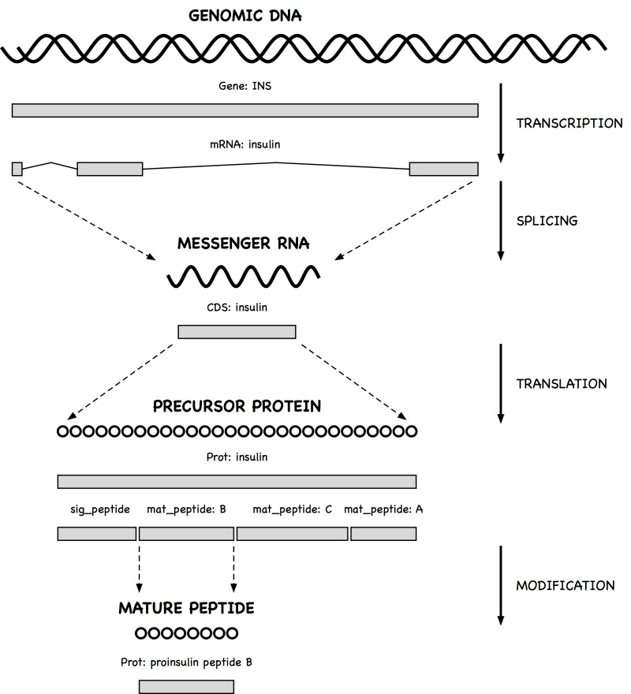

Getting Started
Introduction
Entrez Direct (EDirect) provides access to the NCBI's suite of interconnected databases (publication, sequence, structure, gene, variation, expression, etc.) from a UNIX terminal window. Functions take search terms from command-line arguments. Individual operations are combined to build multi-step queries. Record retrieval and formatting normally complete the process.
EDirect also includes an argument-driven function that simplifies the extraction of data from document summaries or other results that are returned in structured XML format. This can eliminate the need for writing custom software to answer ad hoc questions. Queries can move seamlessly between EDirect commands and UNIX utilities or scripts to perform actions that cannot be accomplished entirely within Entrez.
Installation
EDirect will run on UNIX and Macintosh computers that have the Perl language installed, and under the Cygwin UNIX-emulation environment on Windows PCs. To install the EDirect software, copy the following commands and paste them into a terminal window:
cd ~
/bin/bash
perl -MNet::FTP -e \
'$ftp = new Net::FTP("ftp.ncbi.nlm.nih.gov", Passive => 1);
$ftp->login; $ftp->binary;
$ftp->get("/entrez/entrezdirect/edirect.tar.gz");'
gunzip -c edirect.tar.gz | tar xf -
rm edirect.tar.gz
builtin exit
export PATH=${PATH}:$HOME/edirect >& /dev/null || setenv PATH "${PATH}:$HOME/edirect"
./edirect/setup.sh
This downloads several scripts into an "edirect" folder in the user's home directory. The setup.sh script then downloads any missing Perl modules, and may print an additional command for updating the PATH environment variable in the user's configuration file. Copy that command, if present, and paste it into the terminal window to complete the installation process. The editing instructions will look something like:
echo "export PATH=\$PATH:\$HOME/edirect" >> $HOME/.bash_profile
Entrez Direct Functions
Navigation functions support exploration within the Entrez databases:
- esearch performs a new Entrez search using terms in indexed fields.
- elink looks up neighbors (within a database) or links (between databases).
- efilter filters or restricts the results of a previous query.
Records can be retrieved in specified formats or as document summaries:
- efetch downloads records or reports in a designated format.
Desired fields from XML results can be extracted without writing a program:
- xtract converts EDirect XML output into a table of data values.
Several additional functions are also provided:
- einfo obtains information on indexed fields in an Entrez database.
- epost uploads unique identifiers (UIDs) or sequence accession numbers.
- nquire sends a URL request to a web page or CGI service.
Entering Query Commands
UNIX programs are run by typing the name of the program and then supplying any required or optional arguments on the command line. Argument names are letters or words that start with a dash ("-") character.
In order to begin an Entrez search, the user types "esearch" and then enters the required -db (database) and -query arguments. A query on unqualified search terms:
esearch -db pubmed -query "opsin gene conversion"
constructs the appropriate Entrez Utilities (E-utilities) URL from the query terms and executes the search. EDirect handles many technical details behind the scenes (avoiding the learning curve normally required for E-utilities programming), and saves the results on the Entrez history server.
Constructing Multi-Step Queries
EDirect allows individual operations to be described separately, combining them into a multi-step query by using the vertical bar ("|") UNIX pipe symbol. Piping esearch to elink:
esearch -db pubmed -query "opsin gene conversion" | elink -related
will look up related articles (precomputed PubMed neighbors) of the initial results.
Writing Commands on Multiple Lines
A query can be continued on the next line by typing the backslash ("\") UNIX escape character immediately before pressing the Return key. Continuing the query links to all protein sequences published in the neighbor articles:
esearch -db pubmed -query "opsin gene conversion" | \
elink -related | \
elink -target protein
The vertical bar pipe symbol also allows the query to continue on the next line.
Retrieving PubMed Reports
Piping PubMed query results to efetch and specifying the "abstract" format:
esearch -db pubmed -query "lycopene cyclase" |
efetch -format abstract
returns a set of reports that can be read by a person:
...
10. PLoS One. 2013;8(3):e58144. doi: 10.1371/journal.pone.0058144. Epub ...
Levels of lycopene β-cyclase 1 modulate carotenoid gene expression and
accumulation in Daucus carota.
Moreno JC(1), Pizarro L, Fuentes P, Handford M, Cifuentes V, Stange C.
Author information:
(1)Departamento de Biología, Facultad de Ciencias, Universidad de Chile,
Santiago, Chile.
Plant carotenoids are synthesized and accumulated in plastids through a
highly regulated pathway. Lycopene β-cyclase (LCYB) is a key enzyme
involved directly in the synthesis of α-carotene and β-carotene through
...
Using efetch -format "medline" instead produces a report that can be entered into common bibliographic management software packages:
...
PMID- 23555569
OWN - NLM
STAT- MEDLINE
DA - 20130404
DCOM- 20130930
LR - 20131121
IS - 1932-6203 (Electronic)
IS - 1932-6203 (Linking)
VI - 8
IP - 3
DP - 2013
TI - Levels of lycopene beta-cyclase 1 modulate carotenoid gene expression
and accumulation in Daucus carota.
PG - e58144
LID - 10.1371/journal.pone.0058144 [doi]
AB - Plant carotenoids are synthesized and accumulated in plastids
through a highly regulated pathway. Lycopene beta-cyclase (LCYB) is a
key enzyme involved directly in the synthesis of alpha-carotene and
...
Retrieving Sequence Reports
Nucleotide and protein records can be downloaded in FASTA format:
esearch -db protein -query "lycopene cyclase" |
efetch -format fasta
which consists of a definition line followed by the sequence:
...
>gi|735882|gb|AAA81880.1| lycopene cyclase [Arabidopsis thaliana]
MDTLLKTPNKLDFFIPQFHGFERLCSNNPYPSRVRLGVKKRAIKIVSSVVSGSAALLDLVPETKKENLDF
ELPLYDTSKSQVVDLAIVGGGPAGLAVAQQVSEAGLSVCSIDPSPKLIWPNNYGVWVDEFEAMDLLDCLD
TTWSGAVVYVDEGVKKDLSRPYGRVNRKQLKSKMLQKCITNGVKFHQSKVTNVVHEEANSTVVCSDGVKI
QASVVLDATGFSRCLVQYDKPYNPGYQVAYGIIAEVDGHPFDVDKMVFMDWRDKHLDSYPELKERNSKIP
TFLYAMPFSSNRIFLEETSLVARPGLRMEDIQERMAARLKHLGINVKRIEEDERCVIPMGGPLPVLPQRV
VGIGGTAGMVHPSTGYMVARTLAAAPIVANAIVRYLGSPSSNSLRGDQLSAEVWRDLWPIERRRQREFFC
FGMDILLKLDLDATRRFFDAFFDLQPHYWHGFLSSRLFLPELLVFGLSLFSHASNTSRLEIMTKGTVPLA
KMINNLVQDRD
...
Additional FASTA -format variants are fasta_cds_na, fasta_cds_aa, and gene_fasta.
Sequence records can also be obtained as GenBank (-format gb) or GenPept (-format gp) flatfiles, which have features annotating particular regions of the sequence:
...
LOCUS AAA81880 501 aa linear PLN ...
DEFINITION lycopene cyclase [Arabidopsis thaliana].
ACCESSION AAA81880
VERSION AAA81880.1 GI:735882
DBSOURCE locus ATHLYC accession L40176.1
KEYWORDS .
SOURCE Arabidopsis thaliana (thale cress)
ORGANISM Arabidopsis thaliana
Eukaryota; Viridiplantae; Streptophyta; Embryophyta;
Tracheophyta; Spermatophyta; Magnoliophyta; eudicotyledons;
Brassicales; Brassicaceae; Camelineae; Arabidopsis.
REFERENCE 1 (residues 1 to 501)
AUTHORS Scolnik,P.A. and Bartley,G.E.
TITLE Nucleotide sequence of lycopene cyclase (GenBank L40176) from
Arabidopsis (PGR95-019)
JOURNAL Plant Physiol. 108 (3), 1343 (1995)
...
FEATURES Location/Qualifiers
source 1..501
/organism="Arabidopsis thaliana"
/db_xref="taxon:3702"
Protein 1..501
/product="lycopene cyclase"
transit_peptide 1..80
mat_peptide 81..501
/product="lycopene cyclase"
CDS 1..501
/gene="LYC"
/coded_by="L40176.1:2..1507"
ORIGIN
1 mdtllktpnk ldffipqfhg ferlcsnnpy psrvrlgvkk raikivssvv sgsaalldlv
61 petkkenldf elplydtsks qvvdlaivgg gpaglavaqq vseaglsvcs idpspkliwp
121 nnygvwvdef eamdlldcld ttwsgavvyv degvkkdlsr pygrvnrkql kskmlqkcit
181 ngvkfhqskv tnvvheeans tvvcsdgvki qasvvldatg fsrclvqydk pynpgyqvay
241 giiaevdghp fdvdkmvfmd wrdkhldsyp elkernskip tflyampfss nrifleetsl
301 varpglrmed iqermaarlk hlginvkrie edercvipmg gplpvlpqrv vgiggtagmv
361 hpstgymvar tlaaapivan aivrylgsps snslrgdqls aevwrdlwpi errrqreffc
421 fgmdillkld ldatrrffda ffdlqphywh gflssrlflp ellvfglslf shasntsrle
481 imtkgtvpla kminnlvqdr d
//
...
Searching and Filtering
Restricting Query Results
The current results can be refined by further term searching in Entrez (useful in the protein database for limiting BLAST neighbors to a taxonomic subset):
esearch -db pubmed -query "opsin gene conversion" |
elink -related |
efilter -query "tetrachromacy"
Results can also be filtered by time. For example, the following statements:
efilter -days 60 -datetype PDAT
efilter -mindate 1990 -maxdate 1999 -datetype PDAT
restrict results to articles published in the previous two months or in the 1990s, respectively.
Qualifying Queries by Indexed Field
Query terms in esearch or efilter can be qualified by entering an indexed field abbreviation in brackets. Boolean operators and parentheses can also be used in the query expression for more complex searches.
Commonly-used fields for PubMed queries include:
[AFFL] Affiliation
[ALL] All Fields
[AUTH] Author
[FAUT] Author - First
[LAUT] Author - Last
[PDAT] Date - Publication
[FILT] Filter
[JOUR] Journal
[LANG] Language
[MAJR] MeSH Major Topic
[SUBH] MeSH Subheading
[MESH] MeSH Terms
[PTYP] Publication Type
[WORD] Text Word
[TITL] Title
[TIAB] Title/Abstract
[UID] UID
and a qualified query looks like:
"Tager HS [AUTH] AND glucagon [TIAB]"
Filters that limit search results to subsets of PubMed include:
humans [MESH]
pharmacokinetics [MESH]
chemically induced [SUBH]
all child [FILT]
english [FILT]
freetext [FILT]
has abstract [FILT]
historical article [FILT]
randomized controlled trial [FILT]
clinical trial, phase ii [PTYP]
review [PTYP]
Sequence databases are indexed with a different set of search fields, including:
[ACCN] Accession
[ALL] All Fields
[AUTH] Author
[GPRJ] BioProject
[ECNO] EC/RN Number
[FKEY] Feature key
[FILT] Filter
[GENE] Gene Name
[JOUR] Journal
[KYWD] Keyword
[MLWT] Molecular Weight
[ORGN] Organism
[PACC] Primary Accession
[PROP] Properties
[PROT] Protein Name
[SQID] SeqID String
[SLEN] Sequence Length
[SUBS] Substance Name
[WORD] Text Word
[TITL] Title
[UID] UID
and a sample query in the protein database is:
"alcohol dehydrogenase [PROT] NOT (bacteria [ORGN] OR fungi [ORGN])"
Additional examples of subset filters in sequence databases are:
mammalia [ORGN]
mammalia [ORGN:noexp]
cds [FKEY]
lacz [GENE]
beta galactosidase [PROT]
protein snp [FILT]
reviewed [FILT]
country united kingdom glasgow [TEXT]
biomol genomic [PROP]
dbxref flybase [PROP]
gbdiv phg [PROP]
phylogenetic study [PROP]
sequence from mitochondrion [PROP]
src cultivar [PROP]
srcdb refseq validated [PROP]
150:200 [SLEN]
(The calculated molecular weight (MLWT) field is only indexed for proteins (and structures), not nucleotides.)
Examining Intermediate Results
EDirect stores intermediate results on the Entrez history server. EDirect navigation functions produce a custom XML message with the relevant fields (database, web environment, query key, and record count) that can be read the next command in the pipeline.
The results of each step in a query can be examined to confirm expected behavior before adding the next step. The Count field in the ENTREZ_DIRECT object contains the number of records returned by the previous step. A good measure of query success is a reasonable (non-zero) count value. For example:
esearch -db protein -query "NP_567004 [ACCN]" |
elink -related |
efilter -query "28000:30000 [MLWT]" |
elink -target structure |
efilter -query "0:2 [RESO]"
produces:
<ENTREZ_DIRECT>
<Db>structure</Db>
<WebEnv>NCID_1_545606712_172.16.22.25_5555_1348089299_358182861</WebEnv>
<QueryKey>7</QueryKey>
<Count>39</Count>
<Step>5</Step>
</ENTREZ_DIRECT>
with 39 protein structures being within the specified molecular weight range and having the desired (X-ray crystallographic) atomic position resolution.
(The QueryKey value is 7 instead of 5 because each elink command obtains the record count by running a separate ESearch query immediately after the ELink operation.)
Combining Independent Queries
Independent esearch, elink, and efilter operations can be performed and then combined at the end by using the history server's "#" convention to indicate query key numbers. (The steps to be combined must be in the same database.) Subsequent esearch commands can take a -db argument to override the database piped in from the previous step. (Piping the queries together is necessary for sharing the same history thread.) For example, the query:
esearch -db protein -query "amyloid* [PROT]" |
elink -target pubmed |
esearch -db gene -query "apo* [GENE]" |
elink -target pubmed |
esearch -query "(#3) AND (#6)" |
efetch -format docsum |
xtract -pattern DocumentSummary -element Id Title
uses truncation searching (entering the beginning of a word followed by an asterisk) to return titles of papers with links to amyloid protein sequence and apolipoprotein gene records:
23962925 Genome analysis reveals insights into physiology and ...
23959870 Low levels of copper disrupt brain amyloid-β homeostasis ...
23371554 Genomic diversity and evolution of the head crest in the ...
23251661 Novel genetic loci identified for the pathophysiology of ...
...
The use of (#3) AND (#6) instead of (#2) AND (#4) above reflects the need for each elink command to execute a separate ESearch query, which increments the QueryKey, in order to obtain the record count. The -label argument can be used to get around this artifact. The label value is prefixed by a "#" symbol and placed in parentheses in the final search. Thus:
esearch -db structure -query "insulin [TITL]" |
elink -target pubmed -label struc_cit |
esearch -db protein -query "insulin [PROT]" |
elink -target pubmed -label prot_cit |
esearch -query "(#struc_cit) AND (#prot_cit)" |
efetch -format uid
will return:
15299880
9235985
9141131
8421693
...
without the need to keep track of the internal QueryKey values.
Structured Data
Advantages of XML Format
The ability to obtain Entrez records in structured XML format, and to easily extract the underlying data, allows the user to ask novel questions that are not addressed by existing analysis software.
The advantage of XML is that many pieces of information are in specific locations in a well-defined data hierarchy. Accessing individual units of data that are fielded by name, such as:
<PubDate>2013</PubDate>
<Source>PLoS One</Source>
<Volume>8</Volume>
<Issue>3</Issue>
<Pages>e58144</Pages>
requires matching the same general pattern, differing only by the element name. This is much simpler than parsing the units from a long, complex string:
1. PLoS One. 2013;8(3):e58144 ...
The disadvantage of XML is that data extraction usually requires programming. But EDirect relies on the common pattern of XML value representation to provide a simplified approach to interpreting XML data.
Conversion of XML Data into Tabular Form
The xtract function uses command-line arguments to direct the selective conversion of XML data into a tab-delimited table. The -pattern argument divides the results into rows, while placement of data into columns is controlled by -element. A trivial example:
xtract -pattern ENTREZ_DIRECT -element Count
will print the number of records in the current query.
Xtract provides control over data conversion with a divide-and-conquer strategy using separate arguments for element selection, path exploration, conditional processing, and report formatting.
Element selection finds every occurrence of each indicated item, printing values as they are encountered. Exploration control limits selection by context, presenting specified objects one at a time. Conditional processing filters by content, requiring presence (or absence) of a particular data value in order to continue. Finally, custom formatting can override the normal tabular layout of the default output.
The details and ramifications of this flexible approach are discussed in the remainder of this section.
Extraction Arguments
Selection arguments (-element, -first, and -last) extract and print data values from the indicated element names:
-element Id -first Name Title
Exploration arguments (-pattern, -group, -block, and -subset) limit data extraction to specified regions of the XML, visiting all relevant objects one at a time. This sets a context for data collection, eliminates the need to provide the full path to a data element, and uncouples the concept of "what to look for" from "where to find it":
-pattern DocumentSummary
-block Author
Each pattern can have multiple groups, each group can have multiple blocks, and each block can have multiple subsets. This design allows nested exploration of complex, hierarchical data to be controlled by a linear chain of command-line argument statements.
Conditional processing arguments restrict exploration statements by object name and value (-if and -unless) or item location (-position):
-if Source -equals "J Bacteriol"
-position first
These commands are issued immediately after an exploration argument.
Formatting arguments (-ret, -tab, -sep, -pfx, -sfx, and -def) allow extensive customization of the default row/column table presentation:
-pfx "\n[" -sfx "]\t" -sep " " -tab "" -ret "\n\n" -def "-"
and apply to subsequent selection statements.
(The "\n" escape sequence indicates a line break, while "\t" specifies a tab character.)
XML Document Summaries
Entrez provides a document summary in structured XML format for every record. Piping a query to "efetch -format docsum":
esearch -db pubmed -query "Garber ED [AUTH] AND PNAS [JOUR]" |
elink -related |
efilter -query "mouse" |
efetch -format docsum
will generate an XML document summary set:
<DocumentSummarySet status="OK">
<DbBuild>Build150407-2207m.3</DbBuild>
<DocumentSummary>
<Id>19650888</Id>
<PubDate>2009 Aug 3</PubDate>
<EPubDate>2009 Aug 3</EPubDate>
<Source>BMC Microbiol</Source>
<Authors>
<Author>
<Name>Cano V</Name>
<AuthType>Author</AuthType>
<ClusterID></ClusterID>
</Author>
<Author>
<Name>Moranta D</Name>
<AuthType>Author</AuthType>
...
Piping the document summary output to:
xtract -outline
will give an indented overview of the XML structure hierarchy:
DbBuild
DocumentSummary
Id
PubDate
EPubDate
Source
Authors
Author
Name
AuthType
ClusterID
Author
Name
...
The outline view presents a clear, uncluttered picture of the XML hierarchy that is useful in designing the appropriate command for actual data extraction. Copy and paste from the -outline output to xtract arguments can help avoid typographical errors. Thus:
esearch -db pubmed -query "Garber ED [AUTH] AND PNAS [JOUR]" |
elink -related |
efilter -query "mouse" |
efetch -format docsum |
xtract -pattern DocumentSummary -element Id SortFirstAuthor Title
returns the PubMed identifier (PMID), first author name, and article title:
19650888 Cano V Klebsiella pneumoniae triggers a cytotoxic ...
19262028 Suto J Metabolic consequence of congenital asplenia ...
19248821 Fukumoto N Hypoalgesic behaviors of P/Q-type voltage- ...
18822497 Trishin AV [Protective activity of secreted proteins of ...
18582214 Singh A Generation and characterization of monoclonal ...
...
Using xtract "-synopsis" instead of -outline show the full path to each element. Piping those results to "sort-uniq-count" (see below) produces a table of unique path counts.
Processing Results with UNIX Utilities
A tab-delimited table can be processed by many UNIX utilities. For example:
esearch -db pubmed -query "Garber ED [AUTH] AND PNAS [JOUR]" |
elink -related |
efilter -query "mouse" |
efetch -format docsum |
xtract -pattern DocumentSummary -element Id SortFirstAuthor Title |
sort -t $'\t' -k 2,2f -k 3,3f
sorts the results of the previous example by author name and then (if there are multiple publications by the same author) alphabetically by title:
17474906 Benghezal M Inhibitors of bacterial virulence ...
19650888 Cano V Klebsiella pneumoniae triggers a cytotoxic ...
17102561 Chatterjee S How reliable are models for malaria vaccine ...
17371870 Clements A Secondary acylation of Klebsiella ...
17142396 Fresno S A second galacturonic acid transferase is ...
16735743 Fresno S The ionic interaction of Klebsiella ...
...
Rather than always having to retype a series of common post-processing instructions, frequently used combinations of UNIX commands can be placed in a function, stored in an alias file (e.g., the user's .bash_profile), and executed by name. (The following two functions are now included as scripts with the EDirect software.) For example:
WordAtATime() {
sed 's/[^a-zA-Z0-9]/ /g; s/^ *//' |
tr 'A-Z' 'a-z' |
fmt -w 1
}
alias word-at-a-time='WordAtATime'
SortUniqCountRank() {
sort -f |
uniq -i -c |
perl -pe 's/\s*(\d+)\s(.+)/$1\t$2/' |
sort -t $'\t' -k 1,1nr -k 2f
}
alias sort-uniq-count-rank='SortUniqCountRank'Titles can be passed to a pair of these UNIX alias commands:
esearch -db pubmed -query "Casadaban transposition immunity" |
elink -related |
efetch -format docsum |
xtract -pattern DocumentSummary -element Title |
word-at-a-time |
sort-uniq-count-rank
to generate a table of word occurrence counts, sorted by frequency:
296 of
175 the
114 transposition
102 and
94 in
93 mu
83 a
61 dna
61 tn3
55 transposon
...
Output Format Customization
The line break between -pattern objects can be overridden with -ret, and the tab character between fields can be replaced by -tab.
The -sep argument is used to distinguish multiple elements of the same type and control their separation independently of the -tab argument. For example:
esearch -db gene -query "deuteranopia" |
efetch -format xml |
xtract -pattern Entrezgene \
-element Gene-track_geneid Gene-ref_locus \
-sep "|" -element Gene-ref_syn_E
combines all synonyms for a gene into a single column, separated by vertical bars:
2652 OPN1MW CBD|GCP|GOP|CBBM|COD5|OPN1MW1
5956 OPN1LW CBP|RCP|ROP|CBBM|COD5
The -sep value also applies to unrelated -element items that are grouped with commas. Otherwise the -tab value delineates individual fields.
Groups or fields are preceded by the -pfx value and followed by the -sfx value, both of which are initially empty.
Missing data values can be marked by the -def argument. For example:
esearch -db pubmed -query "deuteranopia" |
efetch -format xml |
xtract -pattern PubmedArticle -def "-" \
-first MedlineCitation/PMID Author/LastName Keyword
inserts a dash in a column where the specified element is missing.
Pubmed Article XML Records
The PubmedArticle object (for -db pubmed) has a more detailed structure than the DocumentSummary:
esearch -db pubmed -query "tetrachromacy" |
efetch -format xml |
xtract -outline
More information is fielded, including author names, dates, and the abstract:
PubmedArticle
MedlineCitation
PMID
DateCompleted
Year
Month
Day
DateRevised
Year
Month
Day
Article
Journal
ISSN
JournalIssue
Volume
Issue
PubDate
Year
Month
Day
Title
ISOAbbreviation
ArticleTitle
Pagination
MedlinePgn
Abstract
AbstractText
CopyrightInformation
AuthorList
Author
LastName
ForeName
Initials
AffiliationInfo
Affiliation
Author
LastName
...
Using this information to craft a new xtract statement:
esearch -db pubmed -query "tetrachromacy" |
efetch -format xml |
xtract -pattern PubmedArticle -element MedlineCitation/PMID LastName
results in a table of all authors for each record:
23393278 Sabbah Troje Gray Hawryshyn
20884587 Jordan Deeb Bosten Mollon
18230593 Koshitaka Kinoshita Vorobyev Arikawa
17685813 Wachtler Doi Lee Sejnowski
...
(Note that "-element MedlineCitation/PMID" uses the "Parent/Child" construct to prevent the display of additional PMID items that may occur later in CommentsCorrections objects.)
The -first or -last arguments can be used instead of -element, if appropriate.
Exploration of XML Sets
Individual PubmedArticle objects can be retrieved directly by efetch:
efetch -db pubmed -id 20643751 -format xml
The resulting XML has authors with separate fields for last name and initials:
...
<AuthorList>
<Author>
<LastName>Inamdar</LastName>
<ForeName>Arati A</ForeName>
<Initials>AA</Initials>
</Author>
<Author>
<LastName>Masurekar</LastName>
<ForeName>Prakash</ForeName>
<Initials>P</Initials>
</Author>
<Author>
<LastName>Bennett</LastName>
<ForeName>Joan Wennstrom</ForeName>
<Initials>JW</Initials>
</Author>
</AuthorList>
...
Without being given any guidance about context, an -element statement with "Initials" and "LastName" arguments:
efetch -db pubmed -id 1413997,6301692,781293 -format xml |
xtract -pattern PubmedArticle -element MedlineCitation/PMID \
-element Initials LastName
will explore the current record for each argument separately, and thus print all author initials followed by all author last names:
1413997 RK CR JS Mortimer Contopoulou King
6301692 MA NR Krasnow Cozzarelli
781293 MJ Casadaban
Inserting a -block statement redirects data exploration to consider each author one at a time. Subsequent -element statements only see the current author's values:
efetch -db pubmed -id 1413997,6301692,781293 -format xml |
xtract -pattern PubmedArticle -element MedlineCitation/PMID \
-block Author -element Initials LastName
which restores the correct association of initials and last name:
1413997 RK Mortimer CR Contopoulou JS King
6301692 MA Krasnow NR Cozzarelli
781293 MJ Casadaban
Adding a -sep statement to replace the normal tab between group members, and using a comma to combine the two arguments ("Initials,LastName") into a group:
efetch -db pubmed -id 1413997,6301692,781293 -format xml |
xtract -pattern PubmedArticle -element MedlineCitation/PMID \
-block Author -sep " " -element Initials,LastName
results in more desirable formatting of author names:
1413997 RK Mortimer CR Contopoulou JS King
6301692 MA Krasnow NR Cozzarelli
781293 MJ Casadaban
The first or last structured object can be selected by the -position statement:
efetch -db pubmed -id 1413997,6301692,781293 -format xml |
xtract -pattern PubmedArticle -element MedlineCitation/PMID \
-block Author -position first -sep " " -element Initials,LastName
Exploring Separate XML Regions
Multiple -block statements can be used in a single xtract to explore different areas of the XML. This limits element extraction to the desired subregions, and allows disambiguation of fields with identical names.
Combining independent fields with commas allows them to be treated as sets. The tab that normally separates these can be replaced with a -sep argument:
efetch -db pubmed -id 6092233,4640931,4296474 -format xml |
xtract -pattern PubmedArticle -element MedlineCitation/PMID \
-block AuthorList -sep "/" -element LastName "#Author" \
-block PubDate -sep " " -element Year,Month MedlineDate |
sort -t $'\t' -k 3,3n -k 2,2f
This generates a table that allows easy parsing of author last names, counts the number of authors present, and prints the date each record was published, sorting the results by author count:
4296474 Friedmann 1 1968 Apr
4640931 Tager/Steiner 2 1972 Dec
6092233 Calderon/Contopoulou/Mortimer 3 1984 Jul-Aug
(Note that the PubDate object can exist either in a structured form:
<PubDate>
<Year>1968</Year>
<Month>Apr</Month>
<Day>25</Day>
</PubDate>
(with the Day field frequently absent), or in a string form:
<PubDate>
<MedlineDate>1984 Jul-Aug</MedlineDate>
</PubDate>
but would not contain a mixture of both types, so the directive:
-element Year,Month MedlineDate
will only contribute a single column to the output.)
Nested Exploration of Subsets Within XML Sets
Medical Subject Headings (MeSH terms) in a record may be assigned subheadings:
...
<MeshHeading>
<DescriptorName>RNA, Messenger</DescriptorName>
<QualifierName>genetics</QualifierName>
</MeshHeading>
<MeshHeading>
<DescriptorName>Transcription, Genetic</DescriptorName>
</MeshHeading>
<MeshHeading>
<DescriptorName>beta-Galactosidase</DescriptorName>
<QualifierName>genetics</QualifierName>
<QualifierName>metabolism</QualifierName>
</MeshHeading>
</MeshHeadingList>
...
Visiting each MeSH term with a -block statement, and adding a -subset statement within the -block, allows nested exploration of the subheadings for the current MeSH term:
efetch -db pubmed -id 6162838 -format xml |
xtract -pattern PubmedArticle -tab "" -element MedlineCitation/PMID \
-block MeshHeading -pfx "\n" -tab "" -element DescriptorName \
-subset QualifierName -pfx " / " -tab "" -element QualifierName
and creates a list of MeSH terms with associated subheadings:
6162838
Base Sequence
DNA, Recombinant
Escherichia coli / genetics
...
RNA, Messenger / genetics
Transcription, Genetic
beta-Galactosidase / genetics / metabolism
Selection of Attributes
The MeSH term and subheading fields actually have major topic attributes:
...
<MeshHeading>
<DescriptorName MajorTopicYN="N">beta-Galactosidase</DescriptorName>
<QualifierName MajorTopicYN="Y">genetics</QualifierName>
<QualifierName MajorTopicYN="N">metabolism</QualifierName>
</MeshHeading>
...
that can be selected as "DescriptorName@MajorTopicYN" or "@MajorTopicYN":
efetch -db pubmed -id 6162838 -format xml |
xtract -pattern PubmedArticle -tab "" -element MedlineCitation/PMID \
-block MeshHeading -pfx "\n" -sep "|" -tab "" \
-element DescriptorName@MajorTopicYN,DescriptorName \
-subset QualifierName -pfx " / " -sep "|" -tab "" \
-element "@MajorTopicYN,QualifierName"
The major topic value is placed before each MeSH term or subheading:
6162838
N|Base Sequence
Y|DNA, Recombinant
N|Escherichia coli / N|genetics
...
N|RNA, Messenger / Y|genetics
N|Transcription, Genetic
N|beta-Galactosidase / Y|genetics / N|metabolism
The results can be processed by the UNIX stream editor "sed":
sed -e 's/N|//g' -e 's/Y|/*/g'
to display an asterisk for major ("starred" MeSH term) concepts:
6162838
Base Sequence
*DNA, Recombinant
Escherichia coli / genetics
...
RNA, Messenger / *genetics
Transcription, Genetic
beta-Galactosidase / *genetics / metabolism
Recording Values in Variables
A value can be recorded in a variable and then displayed multiple times as needed. Variables are indicated by a hyphen followed by a string of capital letters or digits. The variable "-PMID" is referred to as "&PMID" in an -element argument. For example:
efetch -db pubmed -id 1413997,6301692,781293 -format xml |
xtract -pattern PubmedArticle -PMID MedlineCitation/PMID \
-block Author -element "&PMID" \
-sep " " -tab "\n" -element Initials,LastName
produces a list of authors, with the PMID in the first column of each row:
1413997 RK Mortimer
1413997 CR Contopoulou
1413997 JS King
6301692 MA Krasnow
6301692 NR Cozzarelli
781293 MJ Casadaban
Variable Initialization
Variables can be initialized with a literal value in parentheses:
efetch -db pubmed -id 1413997,6301692,781293 -format xml |
xtract -pattern PubmedArticle -element MedlineCitation/PMID \
-block Author -sep " " -tab "" \
-element "&COM" Initials,LastName -COM "(, )"
This can be used as a placeholder to prevent missing data from shifting columns in a table, or to have additional control over output formatting:
1413997 RK Mortimer, CR Contopoulou, JS King
6301692 MA Krasnow, NR Cozzarelli
781293 MJ Casadaban
All variables are reset when the next record is processed.
Conditional Processing
Xtract provides -if and -unless arguments that filter by element name or name plus data value. For example:
esearch -db pubmed -query "Cozzarelli NR [AUTH]" |
efetch -format xml |
xtract -pattern PubmedArticle -if "#Author" -eq 3 \
-block Author -if LastName -is-not Cozzarelli \
-sep ", " -tab "\n" -element LastName,Initials |
sort | uniq
will select papers with exactly 3 authors and print the coauthor names:
Ackerman, RS
Adams, DE
Alexandrov, AI
Arimondo, PB
Bauer, WR
...
Multiple conditions are specified with -and and -or commands:
-if @score -equals 1 -or @score -starts-with 0.9
The -else command can supply alternative -element or -lbl instructions to be run if the condition is not satisfied:
-if MapLocation -element MapLocation -else -lbl "\-"
Parallel -if and -unless statements can be used to provide a more complex response to alternative conditions that includes nested exploration.
Sequence Records
NCBI Data Model for Sequence Records
The NCBI represents sequence records in a data model that is based on the central dogma of molecular biology. Sequences, including genomic DNA, messenger RNAs, and protein products, are "instantiated" with the actual sequence letters, and are assigned identifiers (e.g., accession numbers) for reference. Features carry information about the biology of a given region, with a location that refers to specific intervals on a particular sequence. Some features may also point to the product sequence of a particular transformation.

A gene feature indicates the location of a heritable region of nucleic acid that confers a measurable phenotype. An mRNA feature on genomic DNA represents the exonic and untranslated regions of the message that remain after transcription and splicing. A coding region (CDS) feature has a product reference to the translated protein.
Since messenger RNA sequences are not always submitted with a genomic region, CDS features (which model the travel of ribosomes on transcript molecules) are traditionally annotated on the genomic sequence, with locations that encode the exonic intervals.
Features display specific biological annotation in qualifiers. For example, the name of a gene is shown in the /gene qualifier. A qualifier can be dynamically generated from underlying data for the convenience of the user. Thus, the sequence of a mature peptide may be extracted from the mat_peptide feature's location on the precursor protein and displayed in a /peptide qualifier, even if a mature peptide is not instantiated.
Sequence Records in INSDSeq XML
Sequence records can be retrieved in an XML version of the GenBank or GenPept flatfile. The query:
efetch -db protein -id 26418308,26418074 -format gpc
returns a set of INSDSeq objects:
<INSDSet>
<INSDSeq>
<INSDSeq_locus>AAN78128</INSDSeq_locus>
<INSDSeq_length>17</INSDSeq_length>
<INSDSeq_moltype>AA</INSDSeq_moltype>
<INSDSeq_topology>linear</INSDSeq_topology>
<INSDSeq_division>INV</INSDSeq_division>
<INSDSeq_update-date>03-JAN-2003</INSDSeq_update-date>
<INSDSeq_create-date>10-DEC-2002</INSDSeq_create-date>
<INSDSeq_definition>alpha-conotoxin ImI precursor, partial [Conus
imperialis]</INSDSeq_definition>
<INSDSeq_primary-accession>AAN78128</INSDSeq_primary-accession>
<INSDSeq_accession-version>AAN78128.1</INSDSeq_accession-version>
<INSDSeq_other-seqids>
<INSDSeqid>gb|AAN78128.1|</INSDSeqid>
<INSDSeqid>gi|26418308</INSDSeqid>
</INSDSeq_other-seqids>
<INSDSeq_source>Conus imperialis</INSDSeq_source>
<INSDSeq_organism>Conus imperialis</INSDSeq_organism>
<INSDSeq_taxonomy>Eukaryota; Metazoa; Lophotrochozoa; Mollusca;
Gastropoda; Caenogastropoda; Hypsogastropoda; Neogastropoda;
Conoidea; Conidae; Conus</INSDSeq_taxonomy>
<INSDSeq_references>
<INSDReference>
...
INSDSeq XML presents biological features and qualifiers (shown here in GenPept format):
FEATURES Location/Qualifiers
source 1..17
/organism="Conus imperialis"
/db_xref="taxon:35631"
/country="Philippines"
Protein <1..17
/product="alpha-conotoxin ImI precursor"
mat_peptide 5..16
/product="alpha-conotoxin ImI"
/note="the C-terminal glycine of the precursor is post
translationally removed"
/calculated_mol_wt=1357
/peptide="GCCSDPRCAWRC"
CDS 1..17
/coded_by="AY159318.1:<1..54"
/note="nAChR antagonist"
in a structured feature table:
...
<INSDFeature>
<INSDFeature_key>mat_peptide</INSDFeature_key>
<INSDFeature_location>5..16</INSDFeature_location>
<INSDFeature_intervals>
<INSDInterval>
<INSDInterval_from>5</INSDInterval_from>
<INSDInterval_to>16</INSDInterval_to>
<INSDInterval_accession>AAN78128.1</INSDInterval_accession>
</INSDInterval>
</INSDFeature_intervals>
<INSDFeature_quals>
<INSDQualifier>
<INSDQualifier_name>product</INSDQualifier_name>
<INSDQualifier_value>alpha-conotoxin ImI</INSDQualifier_value>
</INSDQualifier>
<INSDQualifier>
<INSDQualifier_name>note</INSDQualifier_name>
<INSDQualifier_value>the C-terminal glycine of the precursor is
post translationally removed</INSDQualifier_value>
</INSDQualifier>
<INSDQualifier>
<INSDQualifier_name>calculated_mol_wt</INSDQualifier_name>
<INSDQualifier_value>1357</INSDQualifier_value>
</INSDQualifier>
<INSDQualifier>
<INSDQualifier_name>peptide</INSDQualifier_name>
<INSDQualifier_value>GCCSDPRCAWRC</INSDQualifier_value>
</INSDQualifier>
</INSDFeature_quals>
</INSDFeature>
...
Feature and qualifier names are indicated in data values, not XML element tags, and require -if and -equals to select the desired object and content. The xtract -insd argument simplifies this process, as shown below.
Generating Qualifier Extraction Commands
Because obtaining specific qualifier values from INSDSeq XML is somewhat more complex than previous cases, the xtract -insd argument can be used to generate extraction instructions.
Running xtract -insd in an isolated command prints a new xtract statement that can then be copied, edited if necessary, and pasted into other queries. Running the -insd command within a multi-step pipe dynamically executes the constructed query.
Providing an optional (complete/partial) location indication, a feature key, and then one or more qualifier names:
xtract -insd complete mat_peptide "%peptide" product peptide
creates a new xtract statement that will produce a table of qualifier values from mature peptide features with complete locations. The statement starts with instructions to record the accession and find features of the indicated type:
xtract -pattern INSDSeq -ACCN INSDSeq_accession-version \
-group INSDFeature -if INSDFeature_key -equals mat_peptide \
-unless INSDFeature_partial5 -or INSDFeature_partial3 \
-clr -pfx "\n" -element "&ACCN"
Each qualifier then generates custom extraction code that is appended to the growing query. For example:
-block INSDQualifier \
-if INSDQualifier_name -equals peptide \
-element INSDQualifier_value
Incorporating the xtract -insd command in a query for marine snail venom peptides:
esearch -db pubmed -query "conotoxin" |
elink -target protein |
efilter -query "mat_peptide [FKEY]" |
efetch -format gpc |
xtract -insd complete mat_peptide "%peptide" product peptide
produces a table with columns for accession number, calculated peptide length, product name, and peptide sequence:
AGO59814.1 32 del13b conotoxin DCPTSCPTTCANGWECCKGYPCVRQHCSGCNH
AAO33169.1 16 alpha-conotoxin GIC GCCSHPACAGNNQHIC
ADB65788.1 20 conotoxin Cal 16 LEMQGCVCNANAKFCCGEGR
AAN78128.1 12 alpha-conotoxin ImI GCCSDPRCAWRC
AAF23167.1 31 BeTX toxin CRAEGTYCENDSQCCLNECCWGGCGHPCRHP
ADB65789.1 20 conotoxin Cal 16 LEMQGCVCNANAKFCCGEGR
AAN78279.1 21 conotoxin Vx-II WIDPSHYCCCGGGCTDDCVNC
ABW16858.1 15 marmophin DWEYHAHPKPNSFWT
...
Piping the results to a series of UNIX commands:
grep -i conotoxin |
awk -F '\t' -v 'OFS=\t' '{if ( 10 <= $2 && $2 <= 30 ) print}' |
sort -t $'\t' -u -k 3,4 |
sort -t $'\t' -k 2,2n -k 3,3f |
cut -f 1,3- |
column -s $'\t' -t
filters by product name, limits the results to a specified range of peptide lengths, removes redundant accessions, sorts the table by peptide length, deletes the length column, and aligns the columns for cleaner printing:
AAN78128.1 alpha-conotoxin ImI GCCSDPRCAWRC
AAN78127.1 alpha-conotoxin ImII ACCSDRRCRWRC
ADB43130.1 conotoxin Cal 1a KCCKRHHGCHPCGRK
ADB43131.1 conotoxin Cal 1b LCCKRHHGCHPCGRT
AAO33169.1 alpha-conotoxin GIC GCCSHPACAGNNQHIC
ADB43128.1 conotoxin Cal 5.1 DPAPCCQHPIETCCRR
AAD31913.1 alpha A conotoxin Tx2 PECCSHPACNVDHPEICR
ADB43129.1 conotoxin Cal 5.2 MIQRSQCCAVKKNCCHVG
ADD97803.1 conotoxin Cal 1.2 AGCCPTIMYKTGACRTNRCR
ADB65789.1 conotoxin Cal 16 LEMQGCVCNANAKFCCGEGR
AAD31912.1 alpha A conotoxin Tx1 PECCSDPRCNSSHPELCGGRR
AAN78279.1 conotoxin Vx-II WIDPSHYCCCGGGCTDDCVNC
ADB43125.1 conotoxin Cal 14.2 GCPADCPNTCDSSNKCSPGFPG
ADD97802.1 conotoxin Cal 6.4 GCWLCLGPNACCRGSVCHDYCPR
CAH64846.1 four-loop conotoxin CRPSGSPCGVTSICCGRCSRGKCT
AAD31915.1 O-superfamily conotoxin TxO2 CYDSGTSCNTGNQCCSGWCIFVCL
AAD31916.1 O-superfamily conotoxin TxO3 CYDGGTSCDSGIQCCSGWCIFVCF
AAD31920.1 omega conotoxin SVIA mutant 1 CRPSGSPCGVTSICCGRCYRGKCT
AAD31921.1 omega conotoxin SVIA mutant 2 CRPSGSPCGVTSICCGRCSRGKCT
ABE27010.1 conotoxin fe14.1 SPGSTICKMACRTGNGHKYPFCNCR
ABE27011.1 conotoxin fe14.2 SSGSTVCKMMCRLGYGHLYPSCGCR
ABE27007.1 conotoxin p114.1 GPGSAICNMACRLGQGHMYPFCNCN
ABE27008.1 conotoxin p114.2 GPGSAICNMACRLEHGHLYPFCHCR
ABE27009.1 conotoxin p114.3 GPGSAICNMACRLEHGHLYPFCNCD
...
For records where a particular qualifier is missing:
esearch -db protein -query "RAG1 [GENE] AND Mus musculus [ORGN]" |
efetch -format gpc |
xtract -insd source organism strain |
sort -t $'\t' -u -k 2,3
a dash is inserted as a placeholder:
P15919.2 Mus musculus -
AAO61776.1 Mus musculus 129/Sv
NP_033045.2 Mus musculus C57BL/6
XP_006499075.1 Mus musculus C57BL/6J
EDL27655.1 Mus musculus mixed
BAD69530.1 Mus musculus castaneus -
BAD69531.1 Mus musculus domesticus BALB/c
BAD69532.1 Mus musculus molossinus MOA
Sequence Coordinates
Gene Positions
An understanding of sequence coordinate conventions is necessary in order to use gene positions to retrieve the corresponding chromosome subregion with efetch or with the UCSC browser.
Sequence records displayed in GenBank or GenPept formats use a "one-based" coordinate system, with sequence position numbers starting at "1":
1 catgccattc gttgagttgg aaacaaactt gccggctagc cgcatacccg cggggctgga
61 gaaccggctg tgtgcggcca cagccaccat cctggacaaa cccgaagacg tgagtgaggg
121 tcggcgagaa cttgtgggct agggtcggac ctcccaatga cccgttccca tccccaggga
181 ccccactccc ctggtaacct ctgaccttcc gtgtcctatc ctcccttcct agatcccttc
...
Under this convention, positions refer to the sequence letters themselves:
C A T G C C A T T C
1 2 3 4 5 6 7 8 9 10
and the position of the last base or residue is equal to the length of the sequence. The ATG initiation codon above is at positions 2 through 4, inclusive.
For computer programs, however, using "zero-based" coordinates can simplify the arithmetic used for calculations on sequence positions. The ATG codon in the 0-based representation is at positions 1 through 3. (The UCSC browser uses a hybrid, half-open representation, where the start position is 0-based and the stop position is 1-based.)
Software at NCBI will typically convert positions to 0-based coordinates upon input, perform whatever calculations are desired, and then convert the results to a 1-based representation for display. These transformations are done by simply subtracting 1 from the 1-based value or adding 1 to the 0-based value.
Coordinate Conversions
Retrieving the docsum for a particular gene:
esearch -db gene -query "BRCA2 [GENE] AND human [ORGN]" |
efetch -format docsum
returns the chromosomal position of that gene in 0-based coordinates:
...
<GenomicInfoType>
<ChrLoc>13</ChrLoc>
<ChrAccVer>NC_000013.11</ChrAccVer>
<ChrStart>32315479</ChrStart>
<ChrStop>32399671</ChrStop>
<ExonCount>27</ExonCount>
</GenomicInfoType>
...
Piping the document summary to an xtract command:
xtract -pattern GenomicInfoType -element ChrAccVer ChrStart ChrStop
obtains the accession and 0-based coordinate values:
NC_000013.11 32315479 32399671
EFetch has -seq_start and -seq_stop arguments to retrieve a gene segment, but these expect the sequence subrange to be in 1-based coordinates.
To address this problem, two additional efetch arguments, -chr_start and -chr_stop, allow direct use of the 0-based coordinates:
efetch -db nuccore -format gb -id NC_000013.11 \
-chr_start 32315479 -chr_stop 32399671
and eliminate the need for writing a UNIX shell command to increment the two values.
Xtract has numeric extraction commands to assist with coordinate conversion. Selecting fields with an -inc argument:
xtract -pattern GenomicInfoType -element ChrAccVer -inc ChrStart ChrStop
obtains the accession and 0-based coordinates, then increments the positions to produce 1-based values:
NC_000013.11 32315480 32399672
EDirect knows the policies for sequence positions in all relevant Entrez databases (e.g., gene, snp, dbvar), and provides additional shortcuts for converting these to other conventions. For example:
xtract -pattern GenomicInfoType -element ChrAccVer -1-based ChrStart ChrStop
understands that gene ChrStart and ChrStop fields are 0-based, sees that the desired output is 1-based, and translates the command to convert coordinates using the -inc argument. Similarly:
-element ChrAccVer -ucsc-based ChrStart ChrStop
leaves the 0-based start value unchanged but increments the original stop value to produce the half-open form that can be passed to the UCSC browser:
NC_000013.11 32315479 32399672
Complex Objects
Heterogeneous Data
XML objects can contain a heterogeneous mix of components. For example:
efetch -db pubmed -id 21433338,17247418 -format xml
returns a mixture of book and journal records:
<PubmedArticleSet>
<PubmedBookArticle>
<BookDocument>
...
</PubmedBookData>
</PubmedBookArticle>
<PubmedArticle>
<MedlineCitation>
...
</PubmedData>
</PubmedArticle>
</PubmedArticleSet>
The "Parent/*" construct is used to visit the individual components, even though they may have different names. Piping the XML output to:
xtract -pattern "PubmedArticleSet/*" -element "*"
separately prints the entirety of each XML component:
<PubmedBookArticle><BookDocument> ... </PubmedBookData></PubmedBookArticle>
<PubmedArticle><MedlineCitation> ... </PubmedData></PubmedArticle>
Use of the "Parent/Child" construct can isolate objects of the same name that differ by their location in the XML hierarchy. For example:
efetch -db pubmed -id 21433338,17247418 -format xml |
xtract -pattern "PubmedArticleSet/*" \
-group "BookDocument/AuthorList" -tab "\n" -element LastName \
-group "Book/AuthorList" -tab "\n" -element LastName \
-group "Article/AuthorList" -tab "\n" -element LastName
writes separate lines for book/chapter authors, book editors, and article authors:
Fauci Desrosiers
Coffin Hughes Varmus
Lederberg Cavalli Lederberg
Simply exploring with individual arguments:
-group BookDocument -block AuthorList -element LastName
would visit the editors (at BookDocument/Book/AuthorList) as well as the authors (at BookDocument/AuthorList), and print names in order of appearance in the XML:
Coffin Hughes Varmus Fauci Desrosiers
(In this particular example the book author lists could be distinguished by using -if "@Type" -equals authors or -if "@Type" -equals editors, but exploring by "Parent/Child" is a general position-based approach.)
Recursive Definitions
Certain XML objects returned by efetch are recursively defined, including Taxon in TaxaSet (-db taxonomy) and Gene-commentary in Entrezgene (-db gene). Thus, they can have nested objects with the same XML tag.
Retrieving a set of taxonomy records:
efetch -db taxonomy -id 9606,7227 -format xml
produces XML with nested Taxon objects (marked below with line references) for each rank in the taxonomic lineage:
<TaxaSet>
1 <Taxon>
<TaxId>9606</TaxId>
<ScientificName>Homo sapiens</ScientificName>
...
<LineageEx>
2 <Taxon>
<TaxId>131567</TaxId>
<ScientificName>cellular organisms</ScientificName>
<Rank>no rank</Rank>
3 </Taxon>
4 <Taxon>
<TaxId>2759</TaxId>
<ScientificName>Eukaryota</ScientificName>
<Rank>superkingdom</Rank>
5 </Taxon>
...
</LineageEx>
...
6 </Taxon>
7 <Taxon>
<TaxId>7227</TaxId>
<ScientificName>Drosophila melanogaster</ScientificName>
...
8 </Taxon>
</TaxaSet>
Xtract tracks XML object nesting to determine that the <Taxon> start tag on line 1 is actually closed by the </Taxon> stop tag on line 6, and not by the first </Taxon> encountered on line 3.
When a recursive object is given to an exploration command, selection of data using the -element command:
efetch -db taxonomy -id 9606,7227,10090 -format xml |
xtract -pattern Taxon \
-element TaxId ScientificName GenbankCommonName Division
does not examine fields in the internal objects, and returns information only for the main entries:
9606 Homo sapiens human Primates
7227 Drosophila melanogaster fruit fly Invertebrates
10090 Mus musculus house mouse Rodents
The "*/Child" construct will skip past the outer start tag:
efetch -db taxonomy -id 9606,7227,10090 -format xml |
xtract -pattern Taxon -block "*/Taxon" \
-tab "\n" -element TaxId,ScientificName
to visit the next level of nested objects individually:
131567 cellular organisms
2759 Eukaryota
33154 Opisthokonta
...
Recursive objects can be fully explored with a double-star-slash prefix:
esearch -db gene -query "DMD [GENE] AND human [ORGN]" |
efetch -format xml |
xtract -pattern Entrezgene -block "**/Gene-commentary" \
-tab "\n" -element Gene-commentary_type@value,Gene-commentary_accession
which visits every child object regardless of nesting depth:
genomic NC_000023
mRNA XM_006724469
peptide XP_006724532
mRNA XM_011545467
peptide XP_011543769
...
Advanced Topics
Storing Common Phrases in Alias Files
Long or complicated search phrases can be saved in a file to avoid having to retype (or copy and paste) the full text for each query. Each line of the file has a shortcut keyword, a tab character, and the expanded search term. Shortcuts are referenced by placing them in parentheses after prefixing with a pound ("#") sign.
For example, given a file named "q_aliases" containing:
jour_filt [MULT] AND ncbijournals [FILT]
trans_imm (transposition OR target) immunity
the esearch line in:
esearch -alias q_aliases -db nlmcatalog -query "Science (#jour_filt)" |
efetch -format docsum |
xtract -pattern DocumentSummary -element ISOAbbreviation \
-subset ISSNInfo -sep "|" -element issn,issntype
will be expanded to:
esearch -db nlmcatalog -query "Science [MULT] AND ncbijournals [FILT]"
with the query producing:
J. Zhejiang Univ. Sci. 1009-3095|Print 1009-3095|Linking
Science (80- ) 0193-4511|Print 0193-4511|Linking
Science 0036-8075|Print 1095-9203|Electronic ...
An alias file can also be read in a separate instruction at the beginning of a pipeline or script:
eproxy -alias q_aliases
For maximum flexibility, separate eproxy commands can be piped together to load multiple shortcut files, as long as the shortcut strings are all unique.
Additional EDirect Options
ESearch and EFilter can be given a -sort argument to specify the order of results when the records are retrieved:
esearch -db pubmed -query "opsin gene conversion" -sort "last author" |
efetch -format docsum |
xtract -pattern DocumentSummary -element Id LastAuthor PubDate Title
ELink can return links to the citation list using "-name pubmed_pubmed_citedin", but only for publications with full text deposited in PubMed Central (PMC). For example, the query:
esearch -db pubmed -query "Beadle GW [AUTH]" |
elink -related -name pubmed_pubmed_citedin |
efetch -format docsum |
xtract -pattern Author -element Name |
sort-uniq-count-rank |
head -n 10
produces a ranked list of the ten most cited authors:
13 Beadle GW
8 Ephrussi B
8 Glass NL
7 Hawley RS
7 Mitchell MB
7 PERKINS DD
7 Tatum EL
6 Mitchell HK
6 YANOFSKY C
5 Langley CH
Similarly, "-name pubmed_pubmed_refs" returns an article's reference list, again for publications deposited in PMC.
ELink has several command modes, and these can be specified with the -cmd argument. When not using the default "neighbor_history" command, elink will return an eLinkResult XML object, with the links for each UID presented in separate blocks. For example:
esearch -db pubmed -query "Hoffmann PC [AUTH] AND dopamine [MAJR]" |
elink -related -cmd neighbor |
xtract -pattern LinkSetDb -element Id
will show the original PMID in the first column and related article PMIDs in subsequent columns:
1504781 11754494 3815119 1684029 14614914 12128255 ...
1684029 3815119 1504781 8097798 17161385 14755628 ...
2572612 2903614 6152036 2905789 9483560 1352865 ...
...
When the elink command "prlinks" is used with "ref" mode, it can obtain HTML containing or referencing full text articles directly from the publishers. The UNIX "xargs" command calls elink separately for each identifier:
epost -db pubmed -id 22966225,19880848 |
efilter -query "freetext [FILT]" |
efetch -format uid |
xargs -n 1 elink -db pubmed -cmd prlinks -mode ref -http get -id
The elink -batch flag will bypass the Entrez history mechanism for large queries.
Xtract Special Topics
Self-closing tags of the standard form:
<Na-strand/>
or alternative form:
<Na-strand></Na-strand>
have no text content and thus cannot be selected with an -element command. If the tag contains an attribute:
<Seq-interval_strand>
<Na-strand value="plus"/>
</Seq-interval_strand>
it can be selected by matching on the specified value:
-group Seq-interval_strand \
-block Seq-interval_strand -if Na-strand@value -equals plus -lbl "+" \
-block Seq-interval_strand -if Na-strand@value -equals minus -lbl "-"
The -pattern, -group, -block, and -subset commands provide a nested hierarchy of loop organizers for exploration of XML objects. Each pattern can contain multiple groups, each group can encompass multiple blocks, and each block can have multiple subsets.
Use of different argument names allows a linear representation of loop nesting, and provides sufficient flexibility to identify and extract arbitrary data from XML records in Entrez.
Sketching in pseudo code can clarify relative nesting levels. The extraction command:
xtract -pattern PubmedArticle \
-block Author -element Initials,LastName \
-block MeshHeading \
-if QualifierName \
-element DescriptorName \
-subset QualifierName -element QualifierName
could be represented as a computer program in pseudo code by:
for each Pubmed record {
for each Author {
print Initials LastName
}
for each MeSH term {
if Subheadings are present {
print Term Name
for each Subheading {
print Subheading Name
}
}
}
}Extra arguments (-division, -branch, -section, and -unit) are held in reserve to provide additional levels of organization, should the need arise in the future for processing complex, deeply-nested XML data. The full set of commands, in order of rank, are:
-pattern
-division
-group
-branch
-block
-section
-subset
-unit
Starting xtract exploration with -block, and expanding with -group and -subset, leaves additional level names that can be used wherever needed without having to redesign the entire command.
Querying External Web Services
The EDirect nquire function can be used to obtain data from an arbitrary URL. Queries are built up from command-line arguments. For example:
nquire -url "https://eutils.ncbi.nlm.nih.gov/entrez/eutils/esearch.fcgi" \
-db pubmed -term insulin
reads the URL and then tag/value pairs to generate an E-utilities query:
https://eutils. ... .gov/entrez/eutils/esearch.fcgi?db=pubmed&term=insulin
Paths can be separated into components, which are combined with slashes, so:
-url https://eutils.ncbi.nlm.nih.gov entrez/eutils efetch.fcgi
is converted to:
https://eutils.ncbi.nlm.nih.gov/entrez/eutils/efetch.fcgi
Multiple values between tags are combined with commas. Thus:
-db nuccore -id U54469 V00328 -rettype fasta
is transformed into:
db=nuccore&id=U54469,V00328&rettype=fasta
A value that starts with a hyphen (or minus sign) can be distinguished from a tag by prefixing it with a backslash, so:
nquire -url http://api.geonames.org/countryCode -lat 41.796 -lng "\-87.577"
will be sent as:
http://api.geonames.org/countryCode?lat=41.796&lng=-87.577
and will return "US" for coordinates within Chicago, which has a negative (western hemisphere) longitude value.
The -alias argument can read a file of shortcut keywords and URL aliases. The following aliases are always available:
ncbi_url https://www.ncbi.nlm.nih.gov
eutils_url https://eutils.ncbi.nlm.nih.gov/entrez/eutils
so the command:
nquire -url "(#eutils_url)" esearch.fcgi \
-db gds -term "GSE22309 [ACCN] AND gse [ETYP]" -retmax 200
will run an ESearch query and return an eSearchResult XML object.
Raw XML with inconsistent line-wrapping and indentation can be reformatted for easier visual inspection of the data structure and content by piping it through:
xtract -format
Automation
Entrez Direct Commands Within Scripts
Taking an adventurous plunge into the world of programming, a shell script can be written when each output line of one step needs to be processed independently, instead of output being piped in its entirety to the next command. (The simplest shell script is merely a copy of a set of commands that are typed into the terminal for execution.)
In scripts, variables can be set to the results of a command by enclosing the statements in backtick ("`") characters. The variable name is prefixed by a dollar sign ("$") to use its value as an argument in another command. Comments start with a pound sign ("#") and are ignored. Quotation marks within quoted strings are entered by "escaping" with a backslash ("\"). Subroutines can be used to collect common code or simplify the organization of the script.
For example, executing a script file containing:
#!/bin/bash -norc
parse_fields() {
echo "$1" |
xtract -pattern Field \
-pfx "[" -sfx "]" -element Name \
-pfx "" -sfx "" -element FullName Description |
sort -t $'\t' -k 2,2f | column -s $'\t' -t
}
dbs=`einfo -dbs | sort`
for db in $dbs
do
eix=`einfo -db $db`
flds=`parse_fields "$eix"`
echo "$db"
echo ""
echo "$flds"
echo ""
sleep 1
done
will obtain the list of Entrez databases:
annotinfo
assembly
bioproject
...
and then return the abbreviations, names, and descriptions of indexed search fields, for each individual database:
...
mesh
[ALL] All Fields All terms from all searchable fields
[FILT] Filter Limits the records
[MESH] MeSH Terms MeSH Terms
[MHUI] MeSH Unique ID NLM MeSH Browser Unique ID
[MULT] Multi Multi
[PREV] Previous Indexing Previous Indexing
[TYPE] Record Type Record type
[REG] Registry Number Registry Number
[NOTE] Scope Note Scope Note
[ALSO] See Also See Also
[SUBS] Substance Name Substance Name
[WORD] Text Word Free text
[TN] Tree Number Tree Number
[UID] UID Unique number assigned to publication
...
The shell script command:
sleep 1
adds a one second delay between steps in a loop, and can be used to help prevent overuse of the Entrez servers by advanced scripts.
Xargs/Sh Loop
Writing a script to loop through data can sometimes be avoided by creative use of the UNIX xargs and sh commands. Within the "sh -c" command string, the last name and initials arguments (passed in pairs by "xargs -n 2") are substituted at the "$0" and "$1" variables. All of the commands in the sh string are run separately on each name:
echo "Garber ED Casadaban MJ Mortimer RK" |
xargs -n 2 sh -c 'esearch -db pubmed -query "$0 $1 [AUTH]" |
xtract -pattern ENTREZ_DIRECT -lbl "$1 $0" -element Count'
This produces PubMed article counts for each author:
ED Garber 35
MJ Casadaban 46
RK Mortimer 85
While Loop
A "while" loop can also be used to independently process lines of data. Given a file "organisms.txt" containing genus-species names, the UNIX "cat" command:
cat organisms.txt
writes the contents of the file:
Arabidopsis thaliana
Caenorhabditis elegans
Danio rerio
Drosophila melanogaster
Escherichia coli
Homo sapiens
Mus musculus
Saccharomyces cerevisiae
This can be piped to a loop that reads one line at a time:
while read org
do
esearch -db taxonomy -query "$org [LNGE] AND family [RANK]" < /dev/null |
efetch -format docsum |
xtract -pattern DocumentSummary -lbl "$org" \
-element ScientificName Division
done
looking up the taxonomic family name and BLAST division for each organism:
Arabidopsis thaliana Brassicaceae eudicots
Caenorhabditis elegans Rhabditidae nematodes
Danio rerio Cyprinidae bony fishes
Drosophila melanogaster Drosophilidae flies
Escherichia coli Enterobacteriaceae enterobacteria
Homo sapiens Hominidae primates
Mus musculus Muridae rodents
Saccharomyces cerevisiae Saccharomycetaceae ascomycetes
(The "< /dev/null" input redirection construct prevents esearch from "draining" the remaining lines from stdin.)
For Loop
The same results can be obtained with organism names embedded in a "for" loop:
for org in \
"Arabidopsis thaliana" \
"Caenorhabditis elegans" \
"Danio rerio" \
"Drosophila melanogaster" \
"Escherichia coli" \
"Homo sapiens" \
"Mus musculus" \
"Saccharomyces cerevisiae"
do
esearch -db taxonomy -query "$org [LNGE] AND family [RANK]" |
efetch -format docsum |
xtract -pattern DocumentSummary -lbl "$org" \
-element ScientificName Division
done
File Exploration
A for loop can also be used to explore the computer's file system:
for i in *
do
if [ -f "$i" ]
then
echo $(basename "$i")
fi
done
visiting each file within the current directory. The asterisk ("*") character indicates all files, and can be replaced by any pattern (e.g., "*.txt") to limit the file search. The if statement "-f" operator can be changed to "-d" to find directories instead of files, and "-s" selects files with size greater than zero.
Processing in Groups
Because of technical limits in the Entrez link server, it may be necessary to perform an elink operation on a large set of records by using a function that splits unique identifiers or sequence accession numbers into smaller groups:
JoinIntoGroupsOf() {
xargs -n "$@" echo |
sed 's/ /,/g'
}
alias join-into-group-of='JoinIntoGroupsOf'The following example will process sequence records in groups of 200 accessions at a time:
...
efetch -format acc |
join-into-groups-of 200 |
xargs -n 1 sh -c 'epost -db nuccore -format acc -id "$0" |
elink -target pubmed |
efetch -format abstract'
Local Data Cache
Entrez Direct users normally obtain selected data records with efetch, which makes calls to the efetch.fcgi network server. This solution works well when a few thousand records are needed, but it does not scale for much larger sets of data, where the time it takes to download becomes a limiting factor.
Random Access Archive
As an alternative, the entire set of PubMed records can be obtained by file transfer protocol, and can be kept current by retrieving daily update files. The release files can be decompressed and piped through xtract for bulk analysis, but they do not provide random access to individual records.
Recent advances in computer file system technology now allow all of these published journal article citations to be repackaged as individual files on an inexpensive 500 gigabyte external solid state drive, using a hierarchy of folders to organize the 28 million PubMed records. This approach uses pairs of digits in the PMID as nodes in the directory structure, providing direct and rapid access to any record. For example, PMID 12345678 would be stored (as a compressed XML file) at /Archive/12/34/56/12345678.xml.gz.
EDirect now includes an archive-pubmed script to fully automate the download, update, extraction, and storage process. The path to the dedicated solid state drive is passed to the script on the command-line:
archive-pubmed -path /Volumes/alexandria
It can be rerun on a daily or weekly basis to keep the archive up to date. Once the archive is populated, PMIDs can be piped to the fetch-pubmed script in order to retrieve PubmedArticle XML records from the local data cache. fetch-pubmed requires the path to the Archive subdirectory in order to find the data. For example:
esearch -db pubmed -query "cancer AND regulation" |
efetch -format uid |
fetch-pubmed -path /Volumes/alexandria/Archive
The -path argument is not needed by either script if an environment variable is set up in the user's .bash_profile configuration file:
export EDIRECT_PUBMED_MASTER=/Volumes/alexandria
and EDIRECT_PUBMED_MASTER is assumed to be set in subsequent examples.
Local Query Index
A similar divide-and-conquer strategy can be used to create a local information retrieval index suitable for large data mining queries. A second new script, index-pubmed, automates this activity. (It is a superset of archive-pubmed, and can also be run at regular intervals.)
For selected PubMed text fields (the title and primary abstract), the indexing process deletes hyphens after specific prefixes, removes accents and diacritical marks, splits words at punctuation characters, corrects encoding artifacts, and spells out Greek letters for easier searching on scientific terms. It then prepares inverted indices with term positions, and uses them to build distributed term lists and postings files.
For example, the term list that includes "cancer" would be located at /Postings/c/a/n/c/canc.trm. A query on cancer thus only needs to load a very small subset of the total index.
This design supports efficient Boolean expression evaluation (e.g., "(literacy AND numeracy) NOT (adolescent OR child)"), unrestricted wildcard truncation (e.g., "therap*"), phrase queries (e.g., "selective serotonin reuptake inhibitor"), and proximity searches (e.g., "vitamin c ~ ~ common cold").
Local Search Commands
The phrase-search script controls access to the local indices. The actual underlying work is done by the rchive program. Term counts are returned by -count (combining wildcard expansions into a single number) or by -counts (which expands wildcards and displays the individual terms and counts). Using -query returns the PMIDs that match the search expression.
For example, examining the term list with a truncated phrase:
phrase-search -count "catabolite repress*"
translates to:
rchive -path /Volumes/alexandria/Postings -count "catabolite repress*"
and returns the total counts of the individual words:
4325 catabolite
104977 repress*
Using -counts instead of -count returns the expanded terms and the individual postings counts:
4325 catabolite
12002 repress
1 repressa
5 repressable
1 repressae
1 repressant
2 repressants
1 repressc
1 represse
26322 repressed
1 repressedm
...
Searching with a phrase:
phrase-search -query "selective serotonin reuptake inhibitor*" |
fetch-pubmed
generates a list of PMIDs for records that contain the phrase, and then retrieves the relevant PubmedArticle XML from the local archive. Appending the query with [STEM] evaluates the same expression using words that have been processed through the Porter2 stemming algorithm.
XML Processing
In addition to -first and -last commands, xtract has other -element variants that return transformed versions of the selected data values. It also has methods that make it easy to wrap extracted values in XML tags for further processing by xtract.
Data Transformation
Numeric evaluation commands work on a set of data with the same tag names. For example, -num will count the number of named objects (with the -element "#Author" shortcut translated to -num Author). Integer values in XML objects can be added with -sum, and their arithmetic mean can be calculated with -avg. The number of characters in selected contents is returned by -len (with -element "%Title" implemented as -len Title).
Text and string commands work on individual string values. Sentences are split at punctuation marks with -words, or converted to upper case with -upper. The -year command returns the first four-digit token encountered in the data, so it works correctly with an integer Year or the semi-structured MedlineDate string. Applying -year to "PubDate/*" will examine the values of all internal objects, regardless of tag name, and is a general solution for obtaining the PubMed publication year.
The full set of -element variants can be seen by running xtract -help.
Sequential Processing
Data analysis frequently involves several sequential steps of text or numeric processing. Examining the growth of PubMed abstracts over time, for example, requires isolating individual words per abstract, counting the words per article, filtering the results by year, and then computing the average word count per year. The individual operations are all supported by xtract functions, so wrapping intermediate values in XML can eliminate the need for a separate script to perform the calculations.
Running an esearch query on articles published in a chosen journal, limiting the results to articles with abstracts, obtaining the individual PMIDs, and fetching the records from the local data cache:
esearch -db pubmed -query "PNAS [JOUR]" -pub abstract |
efetch -format uid |
fetch-pubmed
returns an XML PubmedArticleSet containing just over 115,000 PubmedArticle records. The next step will be to extract the year of publication and the individual words from the article's abstract. The desired fields in the original XML are:
...
<PubDate>
<Year>2018</Year>
...
</PubDate>
...
<Abstract>
<AbstractText>Ammonia plays a key role in the ....</AbstractText>
</Abstract>
...
Piping the PubmedArticleSet to an initial version of the extraction commands:
xtract -stops -pattern PubmedArticle \
-year "PubDate/*" \
-pfc "\n" -sep "\n" -words Abstract/AbstractText
prints the year and each individual abstract word on a separate line:
2018
ammonia
plays
a
key
role
in
the
neutralization
of
atmospheric
acids
...
Wrapping Results in XML
Customization arguments make it possible to wrap intermediate values (e.g., individual words per abstract, and word counts per article) back into XML form, so they can be sent to another xtract command for the next processing step. Piping the PubmedArticleSet to:
xtract -stops -head "<Set>" -tail "</Set>" -hd "<Rec>" -tl "</Rec>" \
-pattern PubmedArticle \
-pfx "<Year>" -sfx "</Year>" -year "PubDate/*" \
-pfx "<Abst>" -sfx "</Abst>" -sep "</Abst><Abst>" \
-words Abstract/AbstractText
allows extracted values to be written as structured XML fragments (shown reformatted for easier reading):
<Set>
<Rec>
<Year>2018</Year>
<Abst>ammonia</Abst>
<Abst>plays</Abst>
<Abst>a</Abst>
<Abst>key</Abst>
<Abst>role</Abst>
<Abst>in</Abst>
<Abst>the</Abst>
<Abst>neutralization</Abst>
<Abst>of</Abst>
<Abst>atmospheric</Abst>
<Abst>acids</Abst>
...
The -wrp argument is a convenience that sets all of the appropriate customization arguments, shown above, given just the XML object names:
xtract -stops -wrp Set,Rec -pattern PubmedArticle \
-wrp "Year" -year "PubDate/*" \
-wrp "Abst" -words Abstract/AbstractText
making it easy to wrap the intermediate values.
The results are then piped to the next step, which uses -num to count the number of words that were in the abstract of each article:
xtract -wrp Set,Pub -pattern Rec \
-wrp "Year" -element Year \
-wrp "Num" -num Abst
again wrapping the results as structured XML:
<Set>
<Pub><Year>2018</Year><Num>198</Num></Pub>
<Pub><Year>2018</Year><Num>167</Num></Pub>
<Pub><Year>2018</Year><Num>242</Num></Pub>
...
Redirecting the output with "> countsByYear.xml" saves the results in a file, to be used for all subsequent processing.
Selection of XML Subsets
The xtract -select argument allows record subsetting by data value, such as the year of publication. It acts as an "-if" statement, and is followed by conditionals, but with no -element, since its purpose is to pass along the entirety of all records that satisfy the condition.
This can be more convenient, and is significantly faster, than running a separate esearch query for each year, and it can look at data elements that are not indexed by Entrez. It is used in the loop below to limit the processed query results to one year at a time, passing the relevant subset to a second xtract command:
for yr in {1960..2018}
do
cat countsByYear.xml |
xtract -wrp Raw -pattern Pub -select Year -eq "$yr" |
xtract -pattern Raw -lbl "$yr" -avg Num
donethat applies -avg to the word counts in order to compute the average number of abstract words per article for the current year:
1969 121
1970 119
1971 126
...
2016 207
2017 206
2018 205
This result can be saved by redirecting to a file, or it can be piped to:
tee /dev/tty |
xy-plot pnas.png
to print the data to the terminal and then display the results in graphical format. The last step should be:
rm countsByYear.xml
to remove the intermediate file.
Examples
Additional examples of using EDirect to answer ad hoc questions are shown in this section.
Author Frequency
Who are the most prolific authors on rattlesnake phospholipase?
esearch -db pubmed -query \
"crotalid venoms [MAJR] AND phospholipase [TIAB]" |
efetch -format xml |
xtract -pattern PubmedArticle \
-block Author -sep " " -tab "\n" -element LastName,Initials |
sort-uniq-count-rank
This search produces:
74 Lomonte B
73 Gutiérrez JM
49 Soares AM
48 Marangoni S
43 Giglio JR
39 Bon C
...
Publication Distribution
When were the most papers about Legionnaires disease published?
esearch -db pubmed -query "legionnaires disease [TITL]" |
efetch -format docsum |
xtract -pattern DocumentSummary -element PubDate |
cut -c 1-4 |
sort-uniq-count-rank
reports the number of selected papers per year:
173 1979
102 1980
96 1978
92 1981
66 1983
...
Treatment Locations
What is the geographic distribution of sepsis treatment studies?
esearch -db pubmed -query \
"sepsis/therapy [MESH] AND geographic locations [MESH]" |
efetch -format xml |
xtract -pattern PubmedArticle \
-block MeshHeading -if DescriptorName@Type -equals Geographic \
-tab "\n" -element DescriptorName |
sort-uniq-count-rank
returns the number of articles ranked by country (or region) of study:
567 United States
207 Spain
176 Great Britain
156 Germany
123 India
118 Europe
113 France
100 Taiwan
89 Japan
83 Thailand
75 Italy
74 England
...
Research History
What is the historic pattern of publication on diphtheria, pertussis, and tetanus?
#!/bin/bash
result=""
for disease in diphtheria pertussis tetanus
do
current=`for (( yr = 2010; yr >= 1900; yr -= 10 ))
do
esearch -db pubmed -query "$disease [TITL] AND $yr:$((yr+9)) [PDAT]" |
xtract -pattern ENTREZ_DIRECT -lbl "${yr}s" -element Count
done`
heading=`echo -e "${disease:0:4}" | tr [a-z] [A-Z]`
current=`echo -e "Years\t$heading\n-----\t----\n$current"`
if [ -n "$result" ]
then
result=`join -t $'\t' <(echo "$result") <(echo "$current")`
else
result=$current
fi
done
echo "$result"
gives per-decade counts of relevant papers for each disease:
Years DIPH PERT TETA
----- ---- ---- ----
2010s 577 1708 914
2000s 892 1966 1344
1990s 1150 2661 1615
1980s 780 1746 1485
1970s 749 698 1524
1960s 1152 635 2086
1950s 1226 491 1540
1940s 452 173 239
1930s 157 26 46
1920s 128 5 21
1910s 83 7 41
1900s 93 3 28
Protein Homolog
Is there a mammalian equivalent of lycopene cyclase?
esearch -db protein -query \
"lycopene beta cyclase [PROT] AND tomato [ORGN]" |
elink -related |
efetch -format gpc |
xtract -pattern INSDSeq -element INSDSeq_division |
sort-uniq-count-rank
In the resulting list of GenBank division codes:
905 BCT
856 ENV
609 PLN
197 CON
127 PAT
2 SYN
there are no similar sequences (protein neighbors) in the HUM, PRI, ROD, MAM, VRT, or INV divisions, so lycopene cyclase is not present in animals.
Longest Sequences
What are the longest known insulin precursor molecules?
esearch -db protein -query "insulin [PROT]" |
efetch -format docsum |
xtract -pattern DocumentSummary -element Caption Slen Title |
grep -v receptor | sort -k 2,2nr | head -n 5 | cut -f 1 |
xargs -n 1 sh -c 'efetch -db protein -id "$0" -format gp > "$0".gpf'
Post-processing excludes the longer "insulin-like receptor" sequences and saves the GenPept results to individual files named by their sequence accessions:
EFN61235.gpf
EFN80340.gpf
EGW08477.gpf
EKC18433.gpf
ELK28555.gpf
using the right angle bracket (">") UNIX output redirection character.
Archaea Enzyme
Which archaebacteria have chloramphenicol acetyltransferase?
esearch -db protein -query \
"chloramphenicol acetyltransferase [PROT] AND archaea [ORGN]" |
efetch -format gpc |
xtract -pattern INSDSeq -element INSDSeq_organism INSDSeq_definition |
grep -i chloramphenicol | cut -f 1 | sort -f | uniq
produces a list of organism names:
Methanobrevibacter ruminantium
Methanobrevibacter smithii
Methanosarcina acetivorans
...
Structural Similarity
What archaea structures are similar to snake venom phospholipase?
esearch -db structure -query "crotalus [ORGN] AND phospholipase A2" |
elink -related |
efilter -query "archaea [ORGN]" |
efetch -format docsum |
xtract -pattern DocumentSummary \
-if PdbClass -equals Hydrolase \
-element PdbDescr |
sort -f | uniq -i
This query uses geometric comparison (structure neighboring) to find proteins that are too divergent to be detected by sequence similarity with a BLAST search:
Crystal Structure Of Autoprocessed Form Of Tk-Subtilisin
Crystal Structure Of Ca2 Site Mutant Of Pro-S324a
Crystal Structure Of Ca3 Site Mutant Of Pro-S324a
...
Taxonomy Search
Which organisms contain an annotated RefSeq genome MatK gene?
esearch -db nuccore -query "MatK [GENE] AND NC_0:NC_999999999 [PACC]" |
efetch -format docsum |
xtract -pattern DocumentSummary -element TaxId |
sort -n | uniq |
epost -db taxonomy |
efetch -format docsum |
xtract -pattern DocumentSummary -element ScientificName |
sort
The first query obtains taxonomy UIDs from nucleotide document summaries and uploads them for separate retrieval from the taxonomy database:
Acidosasa purpurea
Acorus americanus
...
Zingiber spectabile
Zygnema circumcarinatum
Chromosome Locations
Where are mammalian calmodulin genes located?
esearch -db gene -query "calmodulin [PFN] AND mammalia [ORGN]" |
efetch -format docsum |
xtract -pattern DocumentSummary -MAP "(-)" -MAP MapLocation \
-element Id Name "&MAP" ScientificName
The MAP variable is initialized with a literal dash to prevent missing data from shifting columns in the table:
801 CALM1 14q32.11 Homo sapiens
808 CALM3 19q13.32 Homo sapiens
805 CALM2 2p21 Homo sapiens
24242 Calm1 6q32 Rattus norvegicus
12313 Calm1 12 E Mus musculus
326597 CALM - Bos taurus
50663 Calm2 6q12 Rattus norvegicus
24244 Calm3 1q21 Rattus norvegicus
12315 Calm3 7 9.15 cM Mus musculus
12314 Calm2 17 E4 Mus musculus
617095 CALM1 - Bos taurus
396838 CALM3 6 Sus scrofa
...
The -else command can also be used to insert placeholders for missing data:
esearch -db gene -query "calmodulin [PFN] AND mammalia [ORGN]" |
efetch -format docsum |
xtract -pattern DocumentSummary \
-if MapLocation -element Id Name MapLocation ScientificName \
-else -element Id Name -lbl "\-" -element ScientificName
The -def command can achieve the same result for missing elements:
esearch -db gene -query "calmodulin [PFN] AND mammalia [ORGN]" |
efetch -format docsum |
xtract -pattern DocumentSummary \
-def "-" -element Id Name MapLocation ScientificName
Exon Counts
How many exons are in each dystrophin transcript variant?
esearch -db gene -query "DMD [GENE] AND human [ORGN]" |
efetch -format docsum |
xtract -pattern DocumentSummary \
-block GenomicInfoType -tab "\n" -element ChrAccVer,ChrStart,ChrStop |
This search returns the chromosome accession and the (0-based) gene start and stop positions:
NC_000023.11 33339608 31119221
These are then passed to efetch in (0-based) -chr_start and -chr_stop arguments:
xargs -n 3 sh -c 'efetch -db nuccore -format gbc \
-id "$0" -chr_start "$1" -chr_stop "$2"' |
which converts them to (1-based) -seq_start and -seq_stop arguments and retrieves an INSDSeq XML subset record for the indicated region. That contains a number of alternatively-spliced dystrophin mRNA and CDS features.
Data extraction computes the number of intervals for each mRNA location (corresponding to individual exons or UTRs), and obtains the transcript sequence accession, transcript length, and product name from qualifiers:
xtract -insd complete mRNA "#INSDInterval" \
transcript_id "%transcription" product |
Final processing sorts by number of exons:
grep -i dystrophin |
sed 's/dystrophin, transcript variant //g' |
sort -k 2,2nr -k 4,4nr
resulting in a table of exon counts and transcript lengths:
NC_000023.11 79 NM_004010.3 14083 Dp427p2
NC_000023.11 79 NM_000109.3 14069 Dp427c
NC_000023.11 79 NM_004009.3 14000 Dp427p1
NC_000023.11 79 NM_004006.2 13993 Dp427m
NC_000023.11 78 XM_006724468.1 13920 X1
NC_000023.11 78 XM_006724469.1 13802 X2
NC_000023.11 77 XM_006724470.1 13881 X3
...
Genome Range
What genes are in a given range on the human Y chromosome?
esearch -db gene -query "Homo sapiens [ORGN] AND Y [CHR]" |
efilter -status alive | efetch -format docsum |
xtract -pattern DocumentSummary -NAME Name -DESC Description \
-block GenomicInfoType -if ChrLoc -equals Y \
-min ChrStart,ChrStop -element "&NAME" "&DESC" |
sort -k 1,1n | cut -f 2- |
between-two-genes ASMT IL3RA
This query returns a table of gene names and descriptions, for the human "Y" chromosome, in the region between the ASMT and IL3RA genes:
IL3RA interleukin 3 receptor subunit alpha
LOC101928032 uncharacterized LOC101928032
LOC101928055 uncharacterized LOC101928055
SLC25A6 solute carrier family 25 member 6
LOC105373102 uncharacterized LOC105373102
LINC00106 long intergenic non-protein coding RNA 106
ASMTL-AS1 ASMTL antisense RNA 1
ASMTL acetylserotonin O-methyltransferase-like
P2RY8 purinergic receptor P2Y8
AKAP17A A-kinase anchoring protein 17A
ASMT acetylserotonin O-methyltransferase
(The "-if ChrLoc -equals Y" test is necessary because certain genes (e.g., IL9R) are present in the pseudoautosomal regions common to both X and Y chromosomes:
...
<GenomicInfo>
<GenomicInfoType>
<ChrLoc>Y</ChrLoc>
<ChrAccVer>NC_000024.10</ChrAccVer>
<ChrStart>57184100</ChrStart>
<ChrStop>57197336</ChrStop>
<ExonCount>10</ExonCount>
</GenomicInfoType>
<GenomicInfoType>
<ChrLoc>X</ChrLoc>
<ChrAccVer>NC_000023.11</ChrAccVer>
<ChrStart>155997580</ChrStart>
<ChrStop>156010816</ChrStop>
<ExonCount>10</ExonCount>
</GenomicInfoType>
</GenomicInfo>
...
with each gene copy annotated in its own GenomicInfoType block.)
Gene Counts
How many genes are on each human chromosome?
for chr in {1..22} X Y MT
do
esearch -db gene -query "Homo sapiens [ORGN] AND $chr [CHR]" |
efilter -query "alive [PROP] AND genetype protein coding [PROP]" |
efetch -format docsum |
xtract -pattern DocumentSummary -NAME Name \
-block GenomicInfoType -if ChrLoc -equals "$chr" \
-tab "\n" -element ChrLoc,"&NAME" |
sort | uniq | cut -f 1 | sort-uniq-count-rank
donereturns a count of unique protein-coding genes per chromosome:
2067 1
1268 2
1071 3
755 4
873 5
1034 6
935 7
690 8
801 9
739 10
1288 11
1027 12
335 13
607 14
608 15
862 16
1181 17
277 18
1402 19
545 20
248 21
445 22
844 X
71 Y
13 MT
The range construct cannot be used for Roman numerals, so the equivalent query on Saccharomyces cerevisiae would need to explicitly list all chromosomes:
for chr in I II III IV V VI VII VIII IX X XI XII XIII XIV XV XVI MT
Plastid genes can be selected with "source plastid [PROP]".
Complete Genomes
What complete genomes are available for Escherichia coli?
esearch -db assembly -query \
"Escherichia coli [ORGN] AND representative [PROP]" |
elink -target nuccore -name assembly_nuccore_refseq |
efetch -format docsum |
xtract -pattern DocumentSummary -element AccessionVersion Slen Title |
sed 's/,.*//' |
sort -t $'\t' -k 2,2nr
This search finds genomic assemblies and sorts the results by sequence length, allowing complete genomes to be easily distinguished from smaller plasmids:
NC_002695.1 5498450 Escherichia coli O157:H7 str. Sakai chromosome
NC_018658.1 5273097 Escherichia coli O104:H4 str. 2011C-3493 ...
NC_011751.1 5202090 Escherichia coli UMN026 chromosome
NC_011750.1 5132068 Escherichia coli IAI39 chromosome
NC_017634.1 4747819 Escherichia coli O83:H1 str. NRG 857C chromosome
NC_000913.3 4641652 Escherichia coli str. K-12 substr. MG1655
NC_017659.1 147060 Escherichia coli O83:H1 str. NRG 857C plasmid ...
...
The sed command removes extraneous text in the title (e.g., complete genome, complete sequence, primary assembly) after a comma.
A similar query for humans, additionally filtering out scaffolds, contigs, and plasmids:
esearch -db assembly -query "Homo sapiens [ORGN] AND representative [PROP]" |
elink -target nuccore -name assembly_nuccore_refseq |
efetch -format docsum |
xtract -pattern DocumentSummary -element AccessionVersion Slen Title |
sed 's/,.*//' | grep -v scaffold | grep -v contig | grep -v plasmid | sort
returns the assembled chromosome and mitochondrial sequence records:
NC_000001.11 248956422 Homo sapiens chromosome 1
NC_000002.12 242193529 Homo sapiens chromosome 2
NC_000003.12 198295559 Homo sapiens chromosome 3
NC_000004.12 190214555 Homo sapiens chromosome 4
NC_000005.10 181538259 Homo sapiens chromosome 5
NC_000006.12 170805979 Homo sapiens chromosome 6
NC_000007.14 159345973 Homo sapiens chromosome 7
NC_000008.11 145138636 Homo sapiens chromosome 8
NC_000009.12 138394717 Homo sapiens chromosome 9
NC_000010.11 133797422 Homo sapiens chromosome 10
NC_000011.10 135086622 Homo sapiens chromosome 11
NC_000012.12 133275309 Homo sapiens chromosome 12
NC_000013.11 114364328 Homo sapiens chromosome 13
NC_000014.9 107043718 Homo sapiens chromosome 14
NC_000015.10 101991189 Homo sapiens chromosome 15
NC_000016.10 90338345 Homo sapiens chromosome 16
NC_000017.11 83257441 Homo sapiens chromosome 17
NC_000018.10 80373285 Homo sapiens chromosome 18
NC_000019.10 58617616 Homo sapiens chromosome 19
NC_000020.11 64444167 Homo sapiens chromosome 20
NC_000021.9 46709983 Homo sapiens chromosome 21
NC_000022.11 50818468 Homo sapiens chromosome 22
NC_000023.11 156040895 Homo sapiens chromosome X
NC_000024.10 57227415 Homo sapiens chromosome Y
NC_012920.1 16569 Homo sapiens mitochondrion
This process can be automated to loop through a list of specified organisms:
for org in \
"Agrobacterium tumefaciens" \
"Bacillus anthracis" \
"Escherichia coli" \
"Neisseria gonorrhoeae" \
"Pseudomonas aeruginosa" \
"Shigella flexneri" \
"Streptococcus pneumoniae"
do
esearch -db assembly -query "$org [ORGN]" |
efilter -query "representative [PROP]" |
elink -target nuccore -name assembly_nuccore_refseq |
efetch -format docsum |
xtract -pattern DocumentSummary -element AccessionVersion Slen Title |
sed 's/,.*//' |
grep -v -i -e scaffold -e contig -e plasmid -e sequence -e patch |
sort -t $'\t' -k 2,2nr
done
which generates:
NC_011985.1 4005130 Agrobacterium radiobacter K84 chromosome 1
NC_011983.1 2650913 Agrobacterium radiobacter K84 chromosome 2
NC_005945.1 5228663 Bacillus anthracis str. Sterne chromosome
NC_003997.3 5227293 Bacillus anthracis str. Ames chromosome
NC_002695.1 5498450 Escherichia coli O157:H7 str. Sakai chromosome
NC_018658.1 5273097 Escherichia coli O104:H4 str. 2011C-3493 ...
NC_011751.1 5202090 Escherichia coli UMN026 chromosome
NC_011750.1 5132068 Escherichia coli IAI39 chromosome
NC_017634.1 4747819 Escherichia coli O83:H1 str. NRG 857C chromosome
NC_000913.3 4641652 Escherichia coli str. K-12 substr. MG1655
NC_002946.2 2153922 Neisseria gonorrhoeae FA 1090 chromosome
NC_002516.2 6264404 Pseudomonas aeruginosa PAO1 chromosome
NC_004337.2 4607202 Shigella flexneri 2a str. 301 chromosome
NC_003028.3 2160842 Streptococcus pneumoniae TIGR4 chromosome
NC_003098.1 2038615 Streptococcus pneumoniae R6 chromosome
Amino Acid Composition
What is the amino acid composition of human titin?
abbrev=( Ala Asx Cys Asp Glu Phe Gly His Ile \
Xle Lys Leu Met Asn Pyl Pro Gln Arg \
Ser Thr Sec Val Trp Xxx Tyr Glx )
efetch -db protein -id "Q8WZ42.4" -format gpc |
xtract -pattern INSDSeq -element INSDSeq_sequence |
tr A-Z a-z |
sed 's/[^a-z]//g' |
fold -w 1 |
sort-uniq-count |
while read num lttr
do
idx=$(printf %i "'$lttr'")
ofs=$((idx-97))
echo -e "${abbrev[$ofs]}\t$num"
done |
sort
produces a table of residue counts using the three-letter amino acid abbreviations:
Ala 2084
Arg 1640
Asn 1111
Asp 1720
Cys 513
Gln 942
Glu 3193
Gly 2066
His 478
Ile 2062
Leu 2117
Lys 2943
Met 398
Phe 908
Pro 2517
Ser 2463
Thr 2546
Trp 466
Tyr 999
Val 3184
Amino Acid Substitutions
What are the missense products of green-sensitive opsin?
ApplySNPs() {
seq=""
last=""
while read rsid accn res pos
do
if [ "$accn" != "$last" ]
then
insd=$(efetch -db protein -id "$accn" -format gbc < /dev/null)
seq=$(echo $insd | xtract -pattern INSDSeq -element INSDSeq_sequence)
last=$accn
fi
pfx=""
sfx=""
echo ">$rsid [$accn $res@$pos]"
if [ $pos -gt 1 ]
then
pfx=$(echo ${seq:0:$pos-1})
fi
if [ $pos -lt ${#seq} ]
then
sfx=$(echo ${seq:$pos})
fi
echo "$pfx$res$sfx" | fold -w 50
done
}
esearch -db gene -query "CBD [GENE] AND human [ORGN]" |
elink -target snp |
efetch -format xml |
xtract -pattern Rs -pfx "rs" -RSID Rs@rsId \
-block FxnSet -if @fxnClass -equals missense \
-sep "." -element "&RSID" @protAcc,@protVer \
@residue -tab "\n" -1-based @aaPosition |
sort -t $'\t' -k 2,2 -k 4,4n -k 3,3f -k 1.3n | uniq |
ApplySNPsThe query returns an intermediate table of non-synonymous amino acid substitutions (with 0-based location coordinates) derived from single nucleotide polymorphisms:
rs1238141906 NP_000504.1 K 41
rs1189783086 NP_000504.1 L 43
rs1284438666 NP_000504.1 I 64
rs1223726997 NP_000504.1 T 65
...
The rows are then processed to produce protein sequences with the individual residue substitutions in upper case:
>rs1238141906 [NP_000504.1 K@41]
maqqwslqrlagrhpqdsyedstqssiftytnsnstrgpfKgpnyhiapr
wvyhltsvwmifvviasvftnglvlaatmkfkklrhplnwilvnlavadl
aetviastisvvnqvygyfvlghpmcvlegytvslcgitglwslaiiswe
...
3'UTR Sequences
What are the 3' UTR sequences for lycopene cyclase?
ThreePrimeUTRs() {
xtract -pattern INSDSeq -ACC INSDSeq_accession-version -SEQ INSDSeq_sequence \
-group INSDFeature -if INSDFeature_key -equals CDS -PRD "(-)" \
-block INSDQualifier -if INSDQualifier_name \
-equals product -PRD INSDQualifier_value \
-block INSDFeature -pfc "\n" -element "&ACC" -rst \
-last INSDInterval_to -element "&SEQ" "&PRD" |
while read acc pos seq prd
do
if [ $pos -lt ${#seq} ]
then
echo -e ">$acc 3'UTR: $((pos+1))..${#seq} $prd"
echo "${seq:$pos}" | fold -w 50
elif [ $pos -ge ${#seq} ]
then
echo -e ">$acc NO 3'UTR"
fi
done
}
esearch -db nuccore -query "5.5.1.19 [ECNO]" |
efilter -molecule mrna -source refseq |
efetch -format gbc | ThreePrimeUTRsprints the sequences immediately following the CDS stop codon:
>NM_001328461.1 3'UTR: 1737..1871 lycopene beta cyclase, chloroplastic
gatgaatatagagttactgtgttgtaagctaatcatcatactgatgcaag
tgcattatcacatttacttctgctgatgattgttcataagattatgagtt
agccatttatcaaaaaaaaaaaaaaaaaaaaaaaa
>NM_001316759.1 3'UTR: 1628..1690 lycopene beta cyclase, chloroplastic
atccgagtaattcggaatcttgtccaattttatatagcctatattaatac
...
Upstream Sequences
What sequences are upstream of phenylalanine hydroxylase genes?
esearch -db nuccore -query "U49897 [ACCN]" |
elink -target gene |
elink -target homologene |
elink -target gene |
efetch -format docsum |
xtract -pattern DocumentSummary -if GenomicInfoType -element Id \
-block GenomicInfoType -element ChrAccVer ChrStart ChrStop |
awk -F '\t' -v 'OFS=\t' '{print $1, $2, $3+1, $4+1}'
obtains a series of homologous genes, converting the gene coordinates to 1-based positions suitable for retrieving sequence regions:
5053 NC_000012.12 102917603 102838326
18478 NC_000076.6 87521795 87584137
38871 NT_037436.4 7760453 7763166
24616 NC_005106.4 28066639 28129772
378962 NC_007115.6 17420391 17402704
...
Given a shell script named "upstream.sh":
#!/bin/bash -norc
bases=1500
if [ -n "$1" ]
then
bases=$1
fi
while read id accn start stop
do
if [[ $start -eq 0 || $stop -eq 0 || $start -eq $stop ]]
then
echo "Skipping $id due to ambiguous coordinates"
continue
fi
if [ $start -gt $stop ]
then
stop=$(( start + bases ))
start=$(( start + 1 ))
strand=2
else
stop=$(( start - 1 ))
start=$(( start - bases ))
strand=1
fi
rslt=`efetch -db nuccore -id $accn -format fasta \
-seq_start $start -seq_stop $stop -strand $strand < /dev/null`
echo "$rslt"
done
the data lines can be piped through:
upstream.sh 500
to extract and print the 500 nucleotides immediately upstream of each gene. (Without the argument it will default to 1500 nucleotides.)
Author Combinations
What are the authorship patterns among selected individuals?
The "coauthors.sh" script takes author name arguments to construct a custom data extraction command for analyzing research collaboration patterns:
#!/bin/bash -norc
if [ "$#" -lt 2 ]
then
echo "Must supply at least two author names"
exit 1
fi
query="xtract -pattern PubmedArticle -element MedlineCitation/PMID"
# append a -block statement for each author argument
for auth in "$@"
do
query=`echo "$query -block Author -if LastName -equals \"$auth\"" \
"-sep \" \" -element LastName,Initials"`
done
query=`echo "$query | sort -t \$'\\t' -k 2f -k 1,1n"`
if [ -t 0 ]
then
# stand-alone command, print constructed query for later use
echo "$query"
else
# dynamically execute query on XML data piped to script
res=`eval "$query"`
echo "$res"
fi
If XML publication data are piped to the script, it will read the data and immediately execute the generated xtract query. Otherwise, if called as a stand-alone command, it will print the custom query instructions for later use.
Running the following command:
esearch -db pubmed -query "Casadaban MJ [AUTH] OR Berg CM [AUTH]" |
efetch -format xml |
./coauthors.sh Casadaban Groisman Berg Garber |
./extract-fuse.pl pubmed > author_patterns.htm
first produces an internal result table of PMIDs grouped by author combination:
...
7635839 Casadaban MJ
9634770 Casadaban MJ
1827084 Casadaban MJ Groisman EA
2954879 Casadaban MJ Groisman EA
3020001 Casadaban MJ Groisman EA
3525518 Casadaban MJ Groisman EA
3542967 Casadaban MJ Groisman EA
6324195 Casadaban MJ Groisman EA
3301525 Casadaban MJ Groisman EA Berg CM
The sorted lines are then piped to the "extract-fuse.pl" script:
#!/usr/bin/perl
my $max = scalar @ARGV;
if ( $max < 1 ) {
die "Need argument for database\n";
}
my $db = $ARGV[0];
my $thisline = "";
my $laststr = "";
my $str = "";
my $uid = "";
my $uidlist = "";
my $count = 0;
my $base = "https://www.ncbi.nlm.nih.gov";
my $pfx = "";
while ($thisline = <STDIN>) {
$thisline =~ s/\r//;
$thisline =~ s/\n//;
if ($thisline =~ /^([^\t]+)\t(.+)$/) {
$uid = $1;
$str = $2;
if ( lc ($str) ne lc ($laststr) and $laststr ne "" ) {
$laststr =~ s/\t/, /g;
print "<p>(<a href=\"$base/$db/$uidlist\">";
print " $count </a>) - $laststr</p>\n";
$pfx = "";
$count = 0;
$uidlist = "";
}
$laststr = $str;
$uidlist .= "$pfx$uid";
$pfx = ",";
$count++;
}
}
if ( $laststr ne "" ) {
$laststr =~ s/\t/, /g;
print "<p>(<a href=\"$base/$db/$uidlist\">";
print " $count </a>) - $laststr</p>\n";
}
which combines them into PubMed query URLs, one for each author pattern:
https://www.ncbi.nlm.nih.gov/pubmed/1827084,2954879,3020001,...
Those are then wrapped, along with a record count, in the appropriate HTML tags for web display. If the resulting file is opened with a browser, it presents an argument-order-dependent view of author collaboration:
( 55 ) - Berg CM
( 10 ) - Berg CM, Berg DE
( 1 ) - BERG CM, GARBER ED
( 6 ) - Berg DE, Berg CM
( 39 ) - Casadaban MJ
( 6 ) - Casadaban MJ, Groisman EA
( 1 ) - Casadaban MJ, Groisman EA, Berg CM
Clicking on a hyperlinked record count number opens the document summary or individual article page, so the actual publications can be examined.
Indexed Fields
What date fields are indexed for PubMed?
einfo -db pubmed |
xtract -pattern Field \
-if IsDate -equals Y -and IsHidden -equals N \
-pfx "[" -sfx "]" -element Name \
-pfx "" -sfx "" -element FullName |
sort -k 2f | expand
This produces a list of field abbreviations and names filtered by index type:
[CDAT] Date - Completion
[CRDT] Date - Create
[EDAT] Date - Entrez
[MHDA] Date - MeSH
[MDAT] Date - Modification
[PDAT] Date - Publication
Digital Object Identifiers
How are digital object identifiers obtained from PubMed articles?
esearch -db pubmed -query "Rowley JD [AUTH]" |
efetch -format xml |
xtract -head '<html><body>' -tail '</body></html>' \
-pattern PubmedArticle -PMID MedlineCitation/PMID \
-block ArticleId -if @IdType -equals doi \
-tab '\n' -pfx '<p><a href="http://dx.doi.org/' \
-sep '">' -sfx '</a></p>' -encode ArticleId,"&PMID"
extracts the DOIs and constructs the appropriate URL references:
<html><body>
<p><a href="http://dx.doi.org/10.1038/leu.2013.340">24496283</a></p>
<p><a href="http://dx.doi.org/10.1073/pnas.1310656110">23818607</a></p>
<p><a href="http://dx.doi.org/10.1126/science.1241318">23788787</a></p>
...
These intermediate lines are then piped through:
xtract -format
to produce a minimal HTML document with clickable links:
<?xml version="1.0"?>
<!DOCTYPE html>
<html>
<body>
<p>
<a href="http://dx.doi.org/10.1038/leu.2013.340">24496283</a>
</p>
<p>
<a href="http://dx.doi.org/10.1073/pnas.1310656110">23818607</a>
</p>
...
</body>
</html>
Phrase Searching
Can phrase searching be simulated in Entrez?
The "entrez-phrase-search" script included with EDirect takes advantage of the fact that some short phrases are indexed in certain Entrez fields. Given an input phrase, the script generates overlapping pairs of adjacent words, separately queries on each pair to determine which are present in the pubmed title or abstract index, and keeps those that appear in at least 10 articles. Independent phrases are separated by a plus ("+") sign.
For example, running the following command:
entrez-phrase-search -db pubmed -field WORD \
selective serotonin reuptake inhibitor + monoamine oxidase inhibitor
will generate word pairs from each phrase and run a query on each pair. The individual term counts are:
11343 selective serotonin
11892 serotonin reuptake
6714 reuptake inhibitor
21722 monoamine oxidase
3680 oxidase inhibitor
The combined query will return a search result with 36 articles, and these can then be retrieved by piping to efetch. The script in its current form will not match phrases with plurals (e.g., serotonin reuptake inhibitors) or hyphens (e.g., monoamine-oxidase inhibitor).
Gene-Protein Links
What proteins are produced by a given gene?
Given a query in the gene database, the following commands:
esearch -db gene -query "beta galactosidase [PFN]" |
elink -target protein -name gene_protein_refseq -cmd neighbor |
xtract -pattern LinkSet -element Id
will show the gene ID in the first column and linked RefSeq protein UIDs in subsequent columns.
Piping the results to a Perl script named "gene-protein-links.pl" will read the identifiers and run separate efetch queries on the gene and protein databases:
#!/usr/bin/perl
while ($line = <STDIN>) {
chomp ($line);
@uids = split( /\t/, $line);
$gene = $uids [0];
$proteins = join (',', @uids [1..$#uids]);
$symbol = $data = '';
$cmd = "efetch -format docsum -db gene -id $gene | ";
$cmd .= "xtract -pattern DocumentSummary -element Name CommonName";
open (CMD, "$cmd|");
while (<CMD>) {
$symbol .= $_;
}
close CMD;
if ($proteins ne "") {
$cmd = "efetch -format docsum -db protein -id $proteins | ";
$cmd .= "xtract -pattern DocumentSummary -element Caption Slen Title";
open (CMD, "$cmd|");
while (<CMD>) {
$data .= $_;
}
close CMD;
}
print "$symbol$data\n";
}
printing the gene symbol and organism common name, followed by the protein accessions, lengths, and titles:
GLB1 human
NP_001129074 546 beta-galactosidase isoform c preproprotein ...
NP_001073279 647 beta-galactosidase isoform b [Homo sapiens]
NP_000395 677 beta-galactosidase isoform a preproprotein ...
Glb1 house mouse
NP_033882 647 beta-galactosidase preproprotein [Mus musculus]
Glb1 Norway rat
NP_001101662 647 beta-galactosidase precursor [Rattus norvegicus]
...
Bulk Downloads
How can the entire set of GenBank records for mammals be obtained?
ftp-ls ftp.ncbi.nlm.nih.gov genbank |
grep ".seq.gz" |
grep -e gbmam -e gbpri -e gbrod |
while read file
do
ftp-cp ftp.ncbi.nlm.nih.gov genbank "$file"
gzcat "$file"
rm "$file"
done
will use the ftp-ls and ftp-cp scripts (included with the EDirect software) to retrieve and print GenBank flatfiles for human, primate, rodent, and other mammals:
GBMAM1.SEQ Genetic Sequence Data Bank
February 15 2015
NCBI-GenBank Flat File Release 206.0
Other Mammalian Sequences (Part 1)
20709 loci, 155323216 bases, from 20709 reported sequences
LOCUS AB000170 2732 bp mRNA linear MAM ...
DEFINITION Sus scrofa mRNA for endopeptidase 24.16, complete cds.
ACCESSION AB000170
VERSION AB000170.1 GI:1783121
KEYWORDS endopeptidase 24.16 type M3; endopeptidase 24.16 type M1.
SOURCE Sus scrofa (pig)
ORGANISM Sus scrofa
Eukaryota; Metazoa; Chordata; Craniata; Vertebrata;
Euteleostomi; Mammalia; Eutheria; Laurasiatheria;
Cetartiodactyla; Suina; Suidae; Sus.
REFERENCE 1
AUTHORS Kato,A., Sugiura,N., Saruta,Y., Hosoiri,T., Yasue,H. and
Hirose,S.
TITLE Targeting of endopeptidase 24.16 to different subcellular
compartments by alternative promoter usage
JOURNAL J. Biol. Chem. 272 (24), 15313-15322 (1997)
PUBMED 9182559
REFERENCE 2 (bases 1 to 2732)
AUTHORS Hirose,S.
TITLE Direct Submission
JOURNAL Submitted (27-DEC-1996) Shigehisa Hirose, Tokyo Institute of
Technology, Department of Biological Sciences; 4259
Nagatsuta-cho, Midori-ku, Yokohama, Kanagawa 226-8501, Japan
FEATURES Location/Qualifiers
source 1..2732
/organism="Sus scrofa"
/mol_type="mRNA"
/db_xref="taxon:9823"
/tissue_type="Liver"
/dev_stage="Adult"
/note="porcine"
mRNA 1..2732
/note="corresponding to exon1,5-16 of this gene;
endopeptidase 24.16 type 1"
CDS 175..2289
/standard_name="endopeptidase 24.16"
/note="oligopeptidase M :neurolysin :sBAP(soluble
angiotensin-binding protein) :MEP(microsomal
metalloendopeptidase)"
/codon_start=1
/product="endopeptidase 24.16 type M1"
/protein_id="BAA19060.1"
/db_xref="GI:1783122"
...
For systems with Aspera Connect installed, the asp-ls and asp-cp scripts can be used for faster retrieval:
asp-ls genbank |
grep ".seq.gz" |
grep -e gbmam -e gbpri -e gbrod |
while read file
do
asp-cp genbank "$file"
gzcat "$file"
rm "$file"
done
Appendices
Setting Contact Address and Script Name
EDirect automatically obtains the user's e-mail address from the system, to have someone to notify in case a runaway script causes problems with an Entrez server, but if another contact address is desired (e.g., that of a system administrator or software developer) it can be explicitly set at the beginning of a pipeline or script:
econtact -email author_email_address -tool name_of_script
That way the NCBI has information on who to contact if an infinite loop in a script accidentally abuses NCBI resources. (For convenience, the preferred e-mail address and software tool name can also be set in all E-utilities-calling operations.)
Command-Line Arguments
Arguments for the EDirect functions are listed below:
Use esearch to start a new Entrez search on indexed terms:
Query Specification
-db Database name
-query Query string
Document Order
-sort Result presentation order
Date Constraint
-days Number of days in the past
-datetype Date field abbreviation
-mindate Start of date range
-maxdate End of date range
Limit by Field
-field Query words individually in field
-pairs Query overlapping word pairs
Spell Check
-spell Correct misspellings in query
Miscellaneous Arguments
-label Alias for query step
The elink function looks up related articles or associated records:
Destination Database
-related Neighbors in same database
-target Links in different database
-name Link name (e.g., pubmed_protein_refseq)
Direct Record Selection
-db Database name
-id Unique identifier(s)
Advanced Control
-cmd Command type (returns eLinkResult XML)
-mode "ref" uses LinkOut provider's web site
-holding Name of LinkOut provider
Batch Processing
-batch Bypass Entrez history mechanism
Miscellaneous Arguments
-label Alias for query step
Use efilter to restrict search or link results by indexed terms:
Query Specification
-query Query string
Document Order
-sort Result presentation order
Date Constraint
-days Number of days in the past
-datetype Date field abbreviation
-mindate Start of date range
-maxdate End of date range
Limit by Field
-field Query words individually in field
-pairs Query overlapping word pairs
Spell Check
-spell Correct misspellings in query
Publication Filters
-pub abstract, clinical, english, free, historical,
journal, medline, preprint, published, review,
structured
-journal pnas, "j bacteriol", ...
-released last_week, last_month, last_year, prev_years
Sequence Filters
-country usa:minnesota, united_kingdom, "pacific ocean", ...
-feature gene, mrna, cds, mat_peptide, ...
-location mitochondrion, chloroplast, plasmid, plastid
-molecule genomic, mrna, trna, rrna, ncrna
-organism animals, archaea, bacteria, eukaryotes, fungi,
human, insects, mammals, plants, prokaryotes,
protists, rodents, viruses
-source genbank, insd, pdb, pir, refseq, swissprot, tpa
Gene Filters
-status alive
-type coding, pseudo
SNP Filters
-class acceptor, donor, frameshift, indel, intron,
missense, nonsense, synonymous
Miscellaneous Arguments
-label Alias for query step
The record retrieval function is efetch:
Format Selection
-format Format of record or report
-mode text, xml, asn.1, json
-style withparts, conwithfeat
Direct Record Selection
-db Database name
-id Unique identifier or accession number
Sequence Range
-seq_start First sequence position to retrieve
-seq_stop Last sequence position to retrieve
-strand Strand of DNA to retrieve
Gene Range
-chr_start Sequence range from 0-based coordinates
-chr_stop in gene docsum GenomicInfoType object
Sequence Flags
-complexity 0 = default, 1 = bioseq, 3 = nuc-prot set
-extend Extend sequence retrieval in both directions
-extrafeat Bit flag specifying extra features
Miscellaneous
-raw Skip database-specific XML modifications
-json Convert adjusted XML output to JSON
The xtract function is used for processing XML data:
Processing Flags
-strict Remove HTML and MathML tags
-mixed Allow mixed content XML
-accent Excise Unicode accents and diacritical marks
-ascii Unicode to numeric HTML character entities
-compress Compress runs of spaces
-stops Retain stop words in selected phrases
Data Source
-input Read XML from file instead of stdin
-transform File of substitutions for -translate
Exploration Argument Hierarchy
-pattern Name of record within set
-group Use of different argument
-block names allows command-line
-subset control of nested looping
Exploration Constructs
Object DateRevised
Parent/Child Book/AuthorList
Heterogeneous "PubmedArticleSet/*"
Exhaustive "History/**"
Nested "*/Taxon"
Recursive "**/Gene-commentary"
Conditional Execution
-if Element [@attribute] required
-unless Skip if element matches
-and All tests must pass
-or Any passing test suffices
-else Execute if conditional test failed
-position [first|last|outer|inner|even|odd|all]
-select Select record subset by conditions
String Constraints
-equals String must match exactly
-contains Substring must be present
-is-within String must be present
-starts-with Substring must be at beginning
-ends-with Substring must be at end
-is-not String must not match
Numeric Constraints
-gt Greater than
-ge Greater than or equal to
-lt Less than
-le Less than or equal to
-eq Equal to
-ne Not equal to
Format Customization
-ret Override line break between patterns
-tab Replace tab character between fields
-sep Separator between group members
-pfx Prefix to print before group
-sfx Suffix to print after group
-plg Prologue to print once before elements
-elg Epilogue to print once after elements
-rst Reset -sep through -elg
-clr Clear queued tab separator
-pfc Preface combines -clr and -pfx
-deq Delete and replace queued tab separator
-wrp Wrap elements in XML object
-def Default placeholder for missing fields
-lbl Insert arbitrary text
Element Selection
-element Print all items that match tag name
-first Only print value of first item
-last Only print value of last item
-NAME Record value in named variable
-element Constructs
Tag Caption
Group Initials,LastName
Parent/Child MedlineCitation/PMID
Recursive "**/Gene-commentary_accession"
Unrestricted "PubDate/*"
Attribute DescriptorName@MajorTopicYN
Range MedlineDate[1:4]
Substring "Title[phospholipase | rattlesnake]"
Object Count "#Author"
Item Length "%Title"
Element Depth "^PMID"
Variable "&NAME"
Special -element Operations
Parent Index "+"
Object Name "?"
XML Subtree "*"
Children "$"
Attributes "@"
Numeric Processing
-num Count
-len Length
-sum Sum
-min Minimum
-max Maximum
-inc Increment
-dec Decrement
-sub Difference
-avg Average
-dev Deviation
-med Median
-bin Binary
-bit Bit Count
String Processing
-encode URL-encode <, >, &, ", and ' characters
-upper Convert text to upper-case
-lower Convert text to lower-case
-title Capitalize initial letters of words
-year Extract first 4-digit year from string
-translate Substitute values with -transform table
Text Processing
-terms Partition text at spaces
-words Split at punctuation marks
-pairs Adjacent informative words
-reverse Reverse words in string
-letters Separate individual letters
-clauses Break at phrase separators
-indices Index normalized words
Sequence Processing
-revcomp Reverse-complement nucleotide sequence
-nucleic Subrange determines forward or revcomp
Sequence Coordinates
-0-based Zero-Based
-1-based One-Based
-ucsc-based Half-Open
Command Generator
-insd Generate INSDSeq extraction commands
-insd Argument Order
Descriptors INSDSeq_sequence INSDSeq_definition INSDSeq_division
Flags [complete|partial]
Feature(s) CDS,mRNA
Qualifiers INSDFeature_key "#INSDInterval" gene product
Miscellaneous
-head Print before everything else
-tail Print after everything else
-hd Print before each record
-tl Print after each record
Reformatting
-format [copy|compact|flush|indent|expand]
Modification
-filter Object
[retain|remove|encode|decode|shrink|expand|accent]
[content|cdata|comment|object|attributes|container]
Validation
-verify Report XML data integrity problems
Summary
-outline Display outline of XML structure
-synopsis Display count of unique XML paths
Documentation
-examples Examples of EDirect and xtract usage
The einfo function returns information on Entrez indexed fields:
Database Selection
-db Database name
-dbs Get all database names
Data Summaries
-fields Print field names
-links Print link names
Several additional functions are provided by EDirect:
epost
-db Database name
-id Unique identifier(s) or accession number(s)
-format uid or acc
-input Read from file instead of stdin
-label Alias for query step
eproxy
-alias File of aliases
-pipe Read aliases from stdin
econtact
-email Contact person's address
-tool Name of script or program
nquire
-get Uses HTTP GET instead of POST
-url Base URL for external search
In addition, -email and -tool are available in all E-utilities-calling functions to override default values, -http get will force the use of GET instead of POST, -alias will specify a file of shortcut keywords and query strings or URL sections, and -help will print the list of arguments for each function.
For debugging, -silent will suppress link failure retry messages, -verbose will display the <ENTREZ_DIRECT> field values at each step, -debug will print the internal URL query and XML results of each step, and -base will specify a particular server for quality assurance testing.
EFetch Formats
EFetch -format and -mode values for each database are shown below:
-db -format -mode Report Type
___ _______ _____ ___________
(all)
docsum DocumentSummarySet XML
docsum json DocumentSummarySet JSON
full Same as native except for mesh
uid Unique Identifier List
url Entrez URL
xml Same as -format full -mode xml
bioproject
native BioProject Report
native xml RecordSet XML
biosample
native BioSample Report
native xml BioSampleSet XML
biosystems
native xml Sys-set XML
gds
native xml RecordSet XML
summary Summary
gene
full_report Detailed Report
gene_table Gene Table
native Gene Report
native asn.1 Entrezgene ASN.1
native xml Entrezgene-Set XML
tabular Tabular Report
homologene
alignmentscores Alignment Scores
fasta FASTA
homologene Homologene Report
native Homologene List
native asn.1 HG-Entry ASN.1
native xml Entrez-Homologene-Set XML
mesh
full Full Record
native MeSH Report
native xml RecordSet XML
nlmcatalog
native Full Record
native xml NLMCatalogRecordSet XML
pmc
medline MEDLINE
native xml pmc-articleset XML
pubmed
abstract Abstract
medline MEDLINE
native asn.1 Pubmed-entry ASN.1
native xml PubmedArticleSet XML
(sequences)
acc Accession Number
est EST Report
fasta FASTA
fasta xml TinySeq XML
fasta_cds_aa FASTA of CDS Products
fasta_cds_na FASTA of Coding Regions
ft Feature Table
gb GenBank Flatfile
gb xml GBSet XML
gbc xml INSDSet XML
gene_fasta FASTA of Gene
gp GenPept Flatfile
gp xml GBSet XML
gpc xml INSDSet XML
gss GSS Report
ipg Identical Protein Report
ipg xml IPGReportSet XML
native text Seq-entry ASN.1
native xml Bioseq-set XML
seqid Seq-id ASN.1
snp
chr Chromosome Report
docset Summary
fasta FASTA
flt Flat File
native asn.1 Rs ASN.1
native xml ExchangeSet XML
rsr RS Cluster Report
ssexemplar SS Exemplar List
sra
native xml EXPERIMENT_PACKAGE_SET XML
runinfo xml SraRunInfo XML
structure
mmdb Ncbi-mime-asn1 strucseq ASN.1
native MMDB Report
native xml RecordSet XML
taxonomy
native Taxonomy List
native xml TaxaSet XML
ESearch Sort Order
ESearch -sort values for several databases are listed below:
-db -sort
___ _____
gene
Chromosome
Gene Weight
Name
Relevance
geoprofiles
Default Order
Deviation
Mean Value
Outliers
Subgroup Effect
pubmed
First Author
Journal
Last Author
Pub Date
Recently Added
Relevance
Title
(sequences)
Accession
Date Modified
Date Released
Default Order
Organism Name
Taxonomy ID
snp
Chromosome Base Position
Default Order
Heterozygosity
Organism
SNP_ID
Success Rate
ELink Commands
ELink -cmd options produce results as LinkSet XML:
-cmd Result
____ ______
neighbor Neighbors or links
neighbor_score Neighbors with computed similarity scores
acheck All links available
ncheck Existence of neighbors
lcheck Existence of external links (LinkOuts)
llinks Non-library LinkOut providers
llinkslib All LinkOut providers
prlinks Primary LinkOut provider,
or URL for single UID with -mode ref
EInfo Data
EInfo field data contains status flags for several term list index properties:
<Field>
<Name>ALL</Name>
<FullName>All Fields</FullName>
<Description>All terms from all searchable fields</Description>
<TermCount>138982028</TermCount>
<IsDate>N</IsDate>
<IsNumerical>N</IsNumerical>
<SingleToken>N</SingleToken>
<Hierarchy>N</Hierarchy>
<IsHidden>N</IsHidden>
<IsTruncatable>Y</IsTruncatable>
<IsRangable>N</IsRangable>
</Field>
UNIX Utilities
Several useful classes of UNIX text processing filters, with selected arguments, are presented below:
Process by Contents:
sort Sorts lines of text
-f Ignore case
-n Numeric comparison
-r Reverse result order
-k Field key (start,stop or first)
-u Unique lines with identical keys
-b Ignore leading blanks
-s Stable sort
-t Specify field separator
uniq Removes repeated lines
-c Count occurrences
-i Ignore case
-f Ignore first n fields
-s Ignore first n characters
-d Only output repeated lines
-u Only output non-repeated lines
grep Matches patterns using regular expressions
-i Ignore case
-v Invert search
-w Search expression as a word
-x Search expression as whole line
-e Specify individual pattern
-c Only count number of matches
-n Print line numbers
Regular Expressions:
Characters
. Any single character (except newline)
\w Alphabetic [A-Za-z], numeric [0-9], or underscore (_)
\s Whitespace (space or tab)
\ Escapes special characters
[] Matches any enclosed characters
Positions
^ Beginning of line
$ End of line
\b Word boundary
Repeat Matches
? 0 or 1
* 0 or more
+ 1 or more
{n} Exactly n
Modify Contents:
sed Replaces text strings
-e Specify individual expression
tr Translates characters
-d Delete character
rev Reverses characters on line
Format Contents:
column Aligns columns by content width
-s Specify field separator
-t Create table
expand Aligns columns to specified positions
-t Tab positions
fold Wraps lines at a specific width
-w Line width
Filter by Position:
cut Removes parts of lines
-c Characters to keep
-f Fields to keep
-d Specify field separator
-s Suppress lines with no delimiters
head Prints first lines
-n Number of lines
tail Prints last lines
-n Number of lines
Miscellaneous:
wc Counts words, lines, or characters
-c Characters
-l Lines
-w Words
xargs Constructs arguments
-n Number of words per batch
File Compression:
tar Archive files
-c Create archive
-f Name of output file
-z Compress archive with gzip
gzip Compress file
-k Keep original file
-9 Best compression
unzip Decompress .zip archive
-p Pipe to stdout
gzcat Decompress .gz archive and pipe to stdout
Directory and File Navigation:
cd Changes directory
/ Root
~ Home
. Current
.. Parent
- Previous
ls Lists file names
-1 One entry per line
-a Show files beginning with dot (.)
-l List in long format
-R Recursively explore subdirectories
-S Sort files by size
-t Sort by most recently modified
pwd Prints working directory path
Additional documentation with detailed explanations and examples can be obtained by typing "man" followed by a command name.
Terminal Keyboard Shortcuts
Control and escape sequences can be used within a terminal session to navigate through the command history and to move the cursor for editing the command currently being entered:
Command history:
Ctrl-n Next command
Ctrl-p Previous command
Move cursor forward:
Ctrl-e To end of line
Ctrl-f By one character
Esc-f By one argument
Move cursor backward:
Ctrl-a To beginning of line
Ctrl-b By one character
Esc-b By one argument
Delete:
Del Previous character
Ctrl-d Next character
Ctrl-k To end of line
Ctrl-u Entire line
Ctrl-w Previous word
Esc-Del Previous argument
Esc-d Next argument
Autocomplete:
Tab Completes directory or file names
Program control:
Ctrl-c Quit running program
^x^y Run last command replacing x with y
(Note that Control sequences are typed by holding down Control, hitting the other key, and releasing Control, while Escape sequences are typed by hitting Escape and then hitting the other key.)
Release Notes
EDirect Version 10.9: February 1, 2019
- Xtract -insd supports a sub_sequence qualifier that uses -nucleic and produces upper-case sequence.
- Xtract now has an -is-within string conditional test.
EDirect Version 10.8: January 20, 2019
- EDIRECT_DO_AUTO_ABBREV environment variable restores relaxed matching of command-line arguments.
- Efilter shortcut -journal added for -db pubmed.
- Efilter -pub last_* shortcuts moved to -released.
- Efilter -pub and -feature can take comma-separate list of choices.
- Transmute -docsum command added.
- Transmute -decode and -encode commands renamed to -unescape and -escape.
- Transmute -decode64 and -encode64 commands added.
EDirect Version 10.7: January 14, 2019
- Xtract -nucleic uses bracketed range direction to determine whether to reverse complement the sequence.
EDirect Version 10.6: December 13, 2018
- Local archive script creates command for saving data path in configuration file.
- Xtract -reverse returns -words output in reverse order.
- Efilter shortcut added for -db snp (e.g., -class missense).
- Efetch -format gbc (INSDSeq XML) supports -style withparts and -style conwithfeat.
EDirect Version 10.5: December 4, 2018
- EDirect commands and pipelines support faster access with API keys.
- Xtract attributes can be delimited by quotation marks or apostrophes.
- Transmute -encode and -decode commands added.
- Simplified processing of local inverted index intermediate files.
EDirect Version 10.4: November 13, 2018
- Rchive local indexing code refactored for faster performance.
- Xtract -deq deletes and replaces queued tab separator after the fact.
- Efilter -organism queries in [ORGN] field if argument is not in shortcut list.
EDirect Version 10.3: November 1, 2018
- Rchive -invert, -merge, -promote, and -query steps make better use of multiple processor cores.
- New phrase-search script replaces local-phrase-search.
EDirect Version 10.2: October 15, 2018
- Transmute -x2j joins -j2x to simplify the use of JSON-based services.
- Efetch -json converts adjusted XML output to JSON as a convenience.
- Xtract tag alphabet expanded to accommodate converted JSON data.
- Nquire -ftp takes server, directory, and filename arguments, sends data to stdout.
EDirect Version 10.1: October 9, 2018
- Xtract -mixed improves support for mixed-content XML.
EDirect Version 10.0: September 27, 2018
- Efilter can search for sequence records by sample collection location (e.g., -country "canada new brunswick").
- Xtract parsing code was refactored in preparation for improvements in handling mixed-content XML data.
- Added transmute script for format conversions (e.g., -j2x for JSON to XML).
EDirect Version 9.90: September 17, 2018
- Normalized archive path for low-value PMIDs in preparation for incremental indexing.
EDirect Version 9.80: September 4, 2018
- Xtract XML block reader can run on separate thread for improved performance on computers with surplus processor cores.
- Fixed bug in string cleanup when text starts with a non-ASCII Unicode character.
- Efetch regular expression pattern for detecting mixed-content tags was adjusted.
EDirect Version 9.70: August 22, 2018
- Local archive builds parallel stemmed and non-stemmed indices of terms in the title and abstract.
- Rchive and local-phrase-search use -query for evaluation of non-stemmed terms, -search for evaluation using the stemmed index.
EDirect Version 9.60: August 9, 2018
- Local archive script removes newlines inside PubMed text fields.
- Efetch adds missing newline at end of PubmedArticleSet XML.
EDirect Version 9.50: July 30, 2018
- Local indexing scripts adjusted to accommodate projected range of PMID values.
- Fixed inconsistency in positional indexing of terms with embedded non-alphanumeric characters.
- EDIRECT_PUBMED_WORKING environment variable keeps local archive intermediate files on a separate volume.
- Rchive and local-phrase-search use -exact to round-trip ArticleTitle contents without interpretation as a query formula.
EDirect Version 9.40: July 18, 2018
- Xtract handles misplaced spaces in attributes.
- Xtract -format repairs misplaced spaces in attributes.
EDirect Version 9.30: July 9, 2018
- Local data indexing retains intermediate products, allows rapid streaming of non-redundant current records.
- Index preparation removes apostrophe in trailing 's possessives.
- Wildcard minimum varies with prefix-driven posting character depth.
EDirect Version 9.20: June 26, 2018
- Portability and efficiency improvements to local data cache scripts.
- Xtract handles misplaced spaces in self-closing tags.
EDirect Version 9.10: June 18, 2018
- Added Parent/* element exploration construct to xtract.
- Xtract -year reliably obtains the year from "PubDate/*".
EDirect Version 9.00: June 6, 2018
- Fetch-pubmed -path supplies missing Archive directory if root path is given.
- Efetch cleanup of MathML markup properly handles parentheses.
EDirect Version 8.90: June 4, 2018
- Xtract -transform and -translate allow data value substitution.
- Xtract -wrp simplifies wrapping of extracted values in XML tags.
EDirect Version 8.80: May 29, 2018
- Efetch removes MathML tags from PubmedArticle XML contents, unless the -raw flag is used.
EDirect Version 8.70: May 14, 2018
- Local phrase indexing now uses positional indices instead of adjacent overlapping word pairs.
- Xtract -select uses conditional expressions to filter records.
EDirect Version 8.60: April 26, 2018
- Efetch -format uid pauses between groups, retries on failure.
- Fetch delay drops from 1/3 to 1/10 second if API key is used.
- Local phrase indexing uses smaller files to avoid memory contention.
- Phrase index removes hyphens from selected prefixes.
EDirect Version 8.50: April 13, 2018
- Efetch markup tag removal modified after change in server.
- Xtract -phrase filter split into -require and -exclude commands.
EDirect Version 8.40: April 9, 2018
- Efetch removes markup tags in all PubMed XML.
- Xtract without -strict prints warnings if markup tags are encountered.
- Xtract proximity search moved from -matches to -phrase.
EDirect Version 8.30: April 4, 2018
- Xtract is now available for ARM processors.
EDirect Version 8.20: March 12, 2018
- Minor changes to local record archiving scripts.
EDirect Version 8.10: March 2, 2018
- Xtract -strict and -mixed support MathML element tags in PubmedArticle XML.
EDirect Version 8.00: February 26, 2018
- Efetch -raw skips database-specific XML modifications.
- Added local-phrase-search script.
- Xtract -strict, -mixed, and -repair flag speed improvements.
EDirect Version 7.90: February 1, 2018
- Minor change to installation commands for tcsh.
EDirect Version 7.80: January 12, 2018
- Updated setup.sh script with additional error checking.
EDirect Version 7.70: December 27, 2017
- Added archive-pubmed script to automate local record archiving.
EDirect Version 7.60: November 15, 2017
- Epost -id numeric argument bug fixed.
- Xtract conditional tests can now use subrange specifiers.
- Xtract -strict and -mixed use separate -repair flag to normalize Unicode superscripts and subscripts.
EDirect Version 7.50: October 31, 2017
- Setup instructions now work with the tcsh shell.
- API key value is taken from the NCBI_API_KEY environment variable.
- Efetch -format gb supports -style withparts and -style conwithfeat.
- Xtract supports optional element [min:max] substring extraction.
- Xtract -position supports [first|last|outer|inner|all] argument values.
- Added prepare-stash script for local record archive.
EDirect Version 7.40: September 27, 2017
- Xtract -hash reports checksums for local record archiving.
- Initial support for API keys.
EDirect Version 7.30: September 6, 2017
- Modified stash-pubmed script to work around Cygwin artifact.
- Removed unpack-pubmed script.
- Xtract -archive replaces -stash for local record archiving.
- Xtract -gzip allows compression of archived XML records.
EDirect Version 7.20: August 28, 2017
- Added download-pubmed, download-sequence, unpack-pubmed, stash-pubmed, and fetch-pubmed scripts, for experimental local record storage.
- Xtract -flags [strict|mixed] added to support new local storage scripts.
- Removed obsolete, original Perl implementation of xtract.pl.
EDirect Version 7.10: August 10, 2017
- Xtract -ascii converts non-ASCII Unicode to hexadecimal numeric character references.
- Setup script recognizes Cygwin running under the MinGW emulator.
EDirect Version 7.00: July 10, 2017
- Xtract -mixed and -strict handle multiply-escaped HTML tags.
- Efetch removes normal and escaped HTML tags from PubMed fields.
- Esearch -field processes individual query terms using the designated field, also removing stop words.
- Esearch -pairs splits the query phrase into adjacent overlapping word pairs.
EDirect Version 6.90: July 5, 2017
- Xtract -mixed replaces -relaxed, and -accent replaces -plain.
- Efetch uses larger chunks for -format uid, url, and acc.
- Esearch -log shows constructed URL and QueryTranslation result.
EDirect Version 6.80: June 8, 2017
- Modified download instructions to use edirect.tar.gz archive.
- The ftp-cp script can now read from stdin without the need for xargs.
- Rerunning ftp-cp or asp-cp only attempts to download missing files.
EDirect Version 6.70: May 8, 2017
- Added asp-cp script for faster download of NCBI ftp files using Aspera Connect.
- Xtract -strict and -relaxed handle empty HTML tag variants (e.g., <b/> and <sup/>).
EDirect Version 6.60: April 25, 2017
- Xtract -strict replaces -degloss to remove HTML <i>, <b>, <u>, <sup> and <sub> tags from XML contents.
- Xtract -relaxed allows HTML tags in XML contents, to support current PubMed ftp release files.
- Xtract -plain removes Unicode accents.
- The setup.sh script prints an error message if it cannot fetch missing Perl modules.
EDirect Version 6.50: March 6, 2017
- Xtract -degloss replaces -html to remove HTML <i>, <b>, <u>, <sup> and <sub> tags.
EDirect Version 6.40: March 1, 2017
- Epost detects accession.version input for sequence databases and sets -format acc.
- Xtract -html [remove|encode] converts <i> and <b> tags embedded in XML contents.
EDirect Version 6.30: February 13, 2017
- Efetch -format docsum skips GI-less sequences without summaries.
- Xtract local indexing commands moved to -extras documentation.
EDirect Version 6.20: January 30, 2017
- Xtract -limit and -index allow extraction of selected records from XML file.
EDirect Version 6.10: January 19, 2017
- Added run-ncbi-converter script for processing ASN.1 release files.
- Xtract -format flush option added.
- Removed obsolete accession-dot-version conversion code.
EDirect Version 6.00: December 27, 2016
- Efetch -format docsum removes eSummaryResult wrapper.
- Fixed content truncation bug when Xtract encounters very long sequences.
EDirect Version 5.90: December 21, 2016
- Efetch and Elink readied for switch to accession-dot-version sequence identifier.
- Xtract -insd recognizes INSDInterval_iscomp@value and other boolean attributes.
- Xtract adds experimental phrase processing commands for word index preparation.
EDirect Version 5.80: December 12, 2016
- Efilter adds shortcuts for -db gene (e.g., -status alive, -type coding).
- Xtract numeric conditional tests can use an element name for the second argument (e.g., -if ChrStop -lt ChrStart finds minus strand genes).
EDirect Version 5.70: November 30, 2016
- Xtract -format takes an optional [compact|indent|expand] argument. Processing compact XML is about 15% faster than indent form. Using expand places each attribute on a separate line for ease of reading.
EDirect Version 5.60: November 22, 2016
- Fixed bug in -datetype argument for Esearch and Efilter.
- Added optional argument to filter-stop-words script to indicate replacement.
EDirect Version 5.50: November 16, 2016
- Efetch -id allows non-numeric accessions only for sequence databases.
- Xtract element selection no longer considers fields in recursive sub-objects.
- Xtract introduces a double-star "**/Object" construct to flatten recursive child objects for linear exploration.
- Xtract conditional tests ignore empty self-closing tags.
- Xtract -else simplifies insertion of a placeholder to indicate missing data.
EDirect Version 5.40: November 7, 2016
- Added filter-stop-words and xy-plot scripts.
EDirect Version 5.30: October 31, 2016
- Added support for ecitmatch utility.
- Added amino-acid-composition and between-two-genes scripts.
- The sort-uniq-count and sort-uniq-count-rank scripts take an optional argument (e.g., -n for numeric comparisons, -r to reverse order).
EDirect Version 5.20: October 26, 2016
- Setup script no longer modifies the user's configuration file to update the PATH variable. Instead, it now prints customized instructions for the user to execute. The user may choose to run these commands, but is free to edit the .bash_profile file manually.
- Xtract deprecates -match and -avoid functions and the Element:Value conditional shortcut.
- Xtract -if and -unless commands use compound statements for conditional execution (e.g., -if Element -equals Value).
- Colon now separates namespace prefix from element name in xtract arguments (e.g., -block jats:abstract). Colon at start of element name matches any namespace prefix.
- Xtract -insd uses a dash as placeholder for missing field. Experimental -insdx command is deprecated.
- Precompiled versions of xtract are now provided for Darwin, Linux, and CYGWIN_NT platforms. The appropriate executable is downloaded by the setup script.
EDirect Version 5.10: October 13, 2016
- Xtract adds -0-based, -1-based, and -ucsc numeric extraction/conversion commands for sequence positions from several Entrez databases.
EDirect Version 5.00: September 26, 2016
- Efetch -format fasta removes blank lines between records.
- Xtract -insdx uses a dash to indicate a missing field.
- Xtract -insd no longer has blank lines between records.
- Xtract -input allows reading XML data from a file.
EDirect Version 4.90: September 14, 2016
- Epost -input allows reading from an input file instead of using data piped through stdin.
- Efilter now supports the -sort argument.
- Xtract -filter can recover information in XML comments and CDATA blocks.
EDirect Version 4.80: August 9, 2016
- Xtract -insd controlled vocabularies updated.
EDirect Version 4.70: August 4, 2016
- Einfo -db request can also display -fields and -links data summaries.
- Einfo -dbs prints database names instead of eInfoResult XML.
EDirect Version 4.60: July 18, 2016
- Elink -cmd acheck returns information on all available links for a record.
- Efilter -pub structured limits to articles with structured abstracts.
EDirect Version 4.50: July 1, 2016
- Esearch and Efilter detect and report -query phrase quotation errors.
- Efilter -pub shortcut adds last_week, last_month, and last_year choices.
- Efetch sets -strand 2 for minus strand if -seq_start > -seq_stop or if -chr_start > -chr_stop.
EDirect Version 4.40: June 21, 2016
- Transitioning to use of https for access to NCBI services.
- Epost -db assembly -format acc uses [ASAC] field instead of [ACCN].
EDirect Version 4.30: June 13, 2016
- Efilter -pub preprint limits results to ahead-of-print articles.
- Xtract -pattern Parent/* construct can now process catenated XML files.
EDirect Version 4.20: May 24, 2016
- Xtract command-line argument parsing improvements.
- Nquire -get supersedes -http get.
EDirect Version 4.10: May 3, 2016
- Xtract -format removes multi-line XML comments and CDATA blocks.
EDirect Version 4.00: April 4, 2016
- Esearch adds -spell to correct known misspellings of biological terms in the query string.
- Efilter adds -spell to correct query misspellings, and -pub, -feature, -location, -molecule, -organism, and -source shortcuts. Run efilter -help to see the choices available for each argument.
EDirect Version 3.90: March 21, 2016
- Code optimizations for increased Xtract speed.
EDirect Version 3.80: February 29, 2016
- Xtract can distribute its work among available processor cores for additional speed.
EDirect Version 3.70: February 8, 2016
- Xtract performance improvements.
EDirect Version 3.60: January 11, 2016
- The setup.sh configuration script now downloads a precompiled Xtract executable for selected platforms.
EDirect Version 3.50: December 27, 2015
- Xtract reports error for element:value construct outside of -match or -avoid arguments.
EDirect Version 3.40: December 20, 2015
- Xtract -insd supports extraction from multiple features (e.g., CDS,mRNA).
EDirect Version 3.30: December 3, 2015
- Efetch -format docsum can accept a single sequence accession number in the -id argument.
EDirect Version 3.20: November 30, 2015
- Xtract supports -match conditional execution on values recorded in variables.
EDirect Version 3.10: November 18, 2015
- Efetch adds -chr_start and -chr_stop arguments to specify sequence range from 0-based coordinates in gene docsum GenomicInfoType object.
EDirect Version 3.00: October 30, 2015
- Xtract rewritten in the Go programming language for speed. The setup.sh configuration script installs an older Perl version (2.99) if a local Go compiler is unavailable.
- Efetch -format docsum only decodes HTML entity numbers in select situations.
EDirect Version 2.90: October 15, 2015
- Xtract warns on use of deprecated arguments -present, -absent, and -trim, in preparation for release of much faster version.
EDirect Version 2.80: September 9, 2015
- Xtract uses the "*/Child" construct for nested exploration into recursive structures, replacing the -trim argument.
EDirect Version 2.70: July 14, 2015
- Added entrez-phrase-search script to query on adjacent word pairs indexed in specific fields.
EDirect Version 2.60: June 23, 2015
- Xtract -match and -avoid support "Parent/Child" construct for BLAST XML.
EDirect Version 2.50: April 9, 2015
- Xtract capitalized -Pattern handles recursively-defined top-level objects.
EDirect Version 2.40: March 25, 2015
- EDirect programs use the http_proxy environment variable to work behind firewalls.
EDirect Version 2.30: March 11, 2015
- Cleaned up logic in setup.sh configuration script.
- EPost -format acc works properly on protein accessions.
EDirect Version 2.20: March 4, 2015
- Xtract -match and -avoid recognize "@attribute" without element or value.
EDirect Version 2.10: February 3, 2015
- Added ftp-ls and ftp-cp scripts for convenient access to the NCBI anonymous ftp server.
EDirect Version 2.00: August 28, 2014
- Introduced copy-and-paste installation commands with setup.sh configuration script.
EDirect Version 1.90: August 8, 2014
- Xtract -format combines multiple XML results into a single valid object.
- Improved suppression of 0-count failure messages with -silent flag in scripts.
EDirect Version 1.80: July 15, 2014
- EPost -format acc accepts accessions in an -id argument on the command line.
EDirect Version 1.70: April 23, 2014
- EFetch -format docsum decodes HTML entity numbers embedded in the text.
EDirect Version 1.60: April 3, 2014
- Minor enhancements to xtract -insd.
EDirect Version 1.50: March 29, 2014
- Esearch -sort specifies the order of results when records are retrieved.
- Xtract exploration arguments (e.g., -block) now work on self-closing tags with data in attributes.
EDirect Version 1.40: March 17, 2014
- Xtract -format repairs XML line-wrapping and indentation.
- Implemented -help flag to display the list of command-line arguments for each function.
EDirect Version 1.30: March 3, 2014
- Xtract -insd partial logic was corrected to examine both 5' and 3' partial flags, and the location indicator recognizes "+" or "complete" and "-" or "partial".
EDirect Version 1.20: February 26, 2014
- Xtract -insd detects if it is part of an EDirect sequence record query, and dynamically executes the extraction request for specific qualifier values. When run in isolation it generates extraction instructions that can be incorporated (with modifications, if necessary) into other queries.
EDirect Version 1.10: February 10, 2014
- ESummary was replaced by "efetch -format docsum" to provide a single command for all document retrieval. The esummary command will continue to work for those who prefer it, and to avoid breaking existing scripts.
- Xtract processes each -pattern object immediately upon receipt, eliminating the need for using xargs and sh to split document retrieval into smaller units.
EDirect Version 1.00: February 6, 2014
- Initial public release.
For More Information
Announcement Mailing List
NCBI posts general announcements regarding the E-utilities to the utilities-announce announcement mailing list. This mailing list is an announcement list only; individual subscribers may not send mail to the list. Also, the list of subscribers is private and is not shared or used in any other way except for providing announcements to list members. The list receives about one posting per month. Please subscribe at the above link.
Getting Help
Please refer to the PubMed and Entrez help documents for more information about search queries, database indexing, field limitations and database content.
Suggestions, comments, and questions specifically relating to the EUtility programs may be sent to vog.hin.mln.ibcn@seitilitue.
Publication Details
Author Information
Authors
Jonathan Kans, PhD.Affiliations
Publication History
Created: April 23, 2013; Last Update: February 11, 2019.
Copyright
Publisher
National Center for Biotechnology Information (US), Bethesda (MD)
NLM Citation
Kans J. Entrez Direct: E-utilities on the UNIX Command Line. 2013 Apr 23 [Updated 2019 Feb 11]. In: Entrez Programming Utilities Help [Internet]. Bethesda (MD): National Center for Biotechnology Information (US); 2010-.